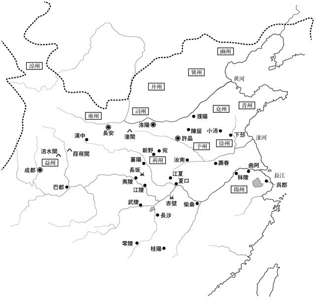

| 三国志５ 赤壁の戦い | |
| 小前亮 | |
| (2014) | |
人物紹介
劉備 あざなは 玄徳 。 漢 の 皇族 の血をひく 流浪 の 貴人 。漢 王朝 の 復興 をめざしている。
関羽 あざなは 雲長 。劉備の 義弟 で、 美 しいひげの 偉丈夫 。 義 のために戦う。
張飛 あざなは 翼徳 。劉備の義弟で、ぎょろ目が 特徴 的な 巨漢 。 酒 と 戦 が大好き。
趙雲 劉備軍の将軍。 白銀 のよろいに 身 をつつんだ 勇将 。
諸葛亮 あざなは 孔明 。劉備に 仕 える天才 軍師 。 通称 「 伏竜 」「 臥竜 」。
糜竺 劉備の 配下 の 文官 。
糜芳 劉備軍の将軍。糜竺の弟。
劉封 劉備の 養子 。
関平 関羽の養子。
劉琦 荊州 を 治 めていた 劉表 の 長男 。劉備の 陣営 に 加 わっている。
献帝 漢の 皇帝 。 実権 はない。
曹操 あざなは 孟徳 。 諸侯 の一人。献帝をあやつり、漢の 丞相 として 政権 を 握 っている。
夏侯惇 曹操軍の 将軍 。 片目 の 猛将 。
夏侯淵 曹操軍の将軍。
曹洪 曹操軍の将軍。
曹仁 曹操軍の将軍。 城 を守るのが 得意 。
許褚 曹操軍の将軍。曹操の 護衛 。
張遼 曹操軍の将軍。もとは 呂布 の 部下 。
張郃 曹操軍の将軍。もとは 袁紹 の部下。
于禁 曹操軍の将軍。
荀彧 曹操軍の 軍師 。
郭嘉 曹操軍の軍師。若くして病死。
賈詡 曹操軍の軍師。もとは 張繍 の部下。
蔡瑁 曹操軍の 水軍 指揮官 。もとは劉表の部下。
蔡中 蔡瑁の弟。
蔣幹 曹操の配下の文官。周瑜の 幼 なじみ。
司馬懿 曹操の配下の文官。
孫権 孫家 の 当主 。父 孫堅 、兄 孫策 の 後 を 継 いで、 江東 を守っている。
孫尚香 孫権の妹。気が強い。
周瑜 孫策の義弟。孫権軍の軍師にして 最高 司令官 。
魯粛 孫権軍の将軍。 外交 を 担当 している。
黄蓋 孫権軍の将軍。 先々代 から孫家に仕えている。 怪我 に強い。
程普 孫権軍の将軍。先々代から孫家に仕えている。
周泰 孫権軍の将軍。もとは 水賊 。
太史慈 孫権軍の将軍。
甘寧 孫権軍の将軍。もとは劉表の部下。
呂蒙 孫権軍の将軍。
丁奉 孫権軍の将軍。
張昭 孫権に仕える文官の 長 。 頑固 な 老人 。
諸葛墐 孫権に仕える文官。諸葛亮の兄。
小喬 周瑜の妻。 絶世 の 美女 。
龐統 諸葛亮と 並 び 称 される 賢人 。 通称 「 鳳雛 」。
董卓 漢朝を 支配 していた 悪漢 。呂布に 裏 切 られて 死亡 。
呂布 古今 無双 の 豪傑 。曹操と劉備に 敗 れて死亡。
袁紹 諸侯の一人。 冀州 を拠点とする。曹操に 敗 れて、後に 病死 。
袁術 諸侯の一人。袁紹の弟。劉備に敗れて、 民 に 殺 される。
劉表 諸侯の一人。荊州を拠点とする。曹操の 侵攻 の前に病死。

一章 舌戦
１
建安 十三年（ 西暦 二〇八年）冬。
二十年ほどつづいた 戦乱 が 終 わりに 近 づいている。そう 考 える 者 は多い。
中国 の北半分を 平定 した 曹操 は、 満 を 持 して 南征 の 号令 を 発 した。 総 兵力 は五十万をこえる 大軍 だ。
曹操の 武器 は兵力だけではない。その 権力 の 源 は、 都 の 宮殿 に 閉 じこめられている 漢 の 皇帝 であった。曹操は漢の 丞相 の 地位 にあり、皇帝の名で 命令 を出したり、 諸侯 に 官位 をあたえたりすることができる。曹操にさからう者は 朝廷 の 敵 として、 処罰 の 対象 となった。
南征の 最初 の 標的 は、 劉表 の 治 める 荊州 であった。劉表は曹操の大軍を前に 病死 し、後をついだ 劉琮 は、 降伏 の 道 を 選 んだ。
困 ったのは、 客将 として荊州にいた 劉備 である。 追 いつめられた劉備は 民 とともに南へ走り、 諸葛亮 の 知略 と、 張飛 、 趙雲 の 武勇 によって、 難 を 逃 れた。劉備 一党 は 江夏 に 落 ちついて、 孫権 との 同盟 に 活路 を見いだそうとしている。
当初 、劉備は 江陵 に向かうと言っていた。曹操はその 情報 を 信 じて江陵に 先 回 りし、出しぬかれたわけだが、くやしがったのは 一瞬 だった。江陵は多くの 軍船 と 物資 が 集 められている 基地 であり、ここをおさえることには大きな 意味 があったのだ。
「劉備にふりまわされて、 大局 を 見失 ってはならぬ。 遠征 の 目的 は 孫権 を降伏させることだ。劉備はその 後 で、ゆっくりと 料理 すればよい」
曹操は劉備に 裏切 られたことを 忘 れてはいないが、 怒 りに 任 せて 暴走 することはなかった。江東の孫権に 使者 を 送 って、降伏をうながす。
無理 に 攻 めようとしないのは、 若 くして死んだ 軍師 、 郭嘉 の 遺言 があったからだ。 地 の 利 がある江東を攻めれば、大きな 被害 をこうむる 恐 れがある。 理 をといて降伏させるべし、と郭嘉は 主張 していた。
とはいえ、曹操は 戦 の 準備 も 進 めている。曹操軍は 水軍 が 弱点 であったが、降伏した劉表軍を 吸収 したことで、それを 克服 しつつある。
孫権はどちらかといえば 慎重 な 性格 で、あえて 不利 な戦にのぞむことはあるまい。孫権が降伏すれば、この中国 大陸 に、もはや曹操の 相手 になる 勢力 はない。曹操による 統一 は、 目前 に 近 づいていると 思 われた。
しかし、 時代 の 流 れにあらがう 者 もいる。
言わずとしれた劉備の 一党 だ。劉備たち 義兄弟 三人は、 黄巾賊 の 討伐 に 参加 して 以来 、 民 の 味方 をつらぬいてきた。
曹操を 倒 し、献帝を 救出 して 漢 王朝 を 復興 させる。そして、民のための 政治 を行う。その 夢 を 実現 させるまで、劉備はあきらめるつもりはなかった。
もっとも、 現実 の 問題 として、劉備たちだけの力では、曹操に 対抗 のしようがない。何としても、孫権を戦いの 場 にひきずりこまなくてはならなかった。
交渉 の 任 をになうのは、 伏竜 こと諸葛亮である。だが、劉備の 信頼 を 一身 に集める軍師は、なかなか 腰 をあげようとしなかった。
「こちらから先に出向いてはなりません。もうすぐ、相手の使者がやってきます。それを 待 ちましょう」
諸葛亮の言うとおり、しばらくして孫権から使者がやってきた。劉表が死んだことに 対 するおくやみだという。劉表の 長男 の 劉琦 が 応対 することになった。
出迎 えの 用意 をする劉琦に、諸葛亮がたずねる。
「今まで、孫権との 間 で、おくやみやお 見舞 いの使者を 交換 したことはありますか」
「いえ、はじめてです。 孫家 とは 仇 同士 でしたから」
孫権の父である 孫堅 は、劉表との戦いで 戦死 した。以来、孫家の者たちは劉表にうらみをいだきつづけている。孫権の 代 には、 国境 付近 で 何度 か 争 いがあり、孫権軍が 優位 に戦いを進めていた。
「では、おくやみは 口実 ですね。使者には、 他 に目的があるのです。曹操軍のことを聞かれても、 決 して 答 えないでください。しつこい場合には、諸葛亮に聞け、と言ってもらえれば、私が対応します」
諸葛亮は同じことを劉備にも言いきかせ、自分は 裏 で使者の 様子 をうかがった。
孫権の使者は 魯粛 という、 堂々 とした中年の男だ。関羽ほどではないが、豊かなひげの 持 ち 主 である。
「ほう、孫権もかなりの 人物 を送りこんできましたね」
諸葛亮がつぶやいた。
魯粛は孫権の 側近 の一人である。 裕福 な家に生まれたが、 貧 しい者にほどこしをしすぎて、たくわえを使いはたしてしまったという。その 気前 の 良 さは、 孫策 と 周瑜 が兵をあげたとき、 倉 のひとつをまるごと 軍 資金 として差しだしたほどだ。孫権が兄のあとをついだとき、周瑜が 頼 みこんで、魯粛は孫家の 臣 となった。以来、 的確 な 助言 で、孫権の信頼を得ている。
魯粛は劉琦に 丁寧 な 礼 をし、孫権からの 手紙 をわたして、みずからもおくやみの 言葉 を 述 べた。 儀式 のようなやりとりが終わると、 宴会 に 移 る。
劉備と劉琦を相手に 酒 をくみかわした魯粛は、やはり曹操軍のことを聞きたがった。
「私は 必死 に逃げていただけなので、よくわからないのです」
「しかし、諸葛亮 殿 の 計略 で、 曹仁 や 曹洪 を 破 ったというではありませんか」
「それでしたら、 孔明 に聞いたほうが早いでしょう」
劉備がかわすと、魯粛は身を 乗 りだしてきた。
「では、諸葛亮殿を 紹介 してくださいませんか。一度、お目にかかりたいと思っていたのです」
どうやら魯粛は、最初から諸葛亮と話すのが目的だったようだ。それなら、と劉備は諸葛亮を 呼 び 寄 せた。
魯粛と諸葛亮は、 初対面 のあいさつがすむと、ひざをつきあわせて 会談 した。二、三のやりとりで 腹 のさぐりあいをした後、魯粛が 意 を決したように言った。
「 実 は、私と 一緒 に 柴桑 にいらしていただきたいのです」
柴桑は孫権が 拠点 としている 街 である。長江の 要所 にあって、 軍事的 な 重要性 が高い。諸葛亮は 微笑 をたたえたまま、目の 動 きで 理由 をたずねた。
「すでにお 察 しかもしれませんが、私は曹操との戦いを主張しております」
柴桑では、曹操の 侵略 にどう対応するか、 激 しい 議論 がくりひろげられている。降伏を主張する 文官 たちに対して、 武将 たちは戦いをのぞんでおり、魯粛はそちらについているという。
「 和 を 重 んじる孫権 様 は、いまのところ、 戦火 をさける 方向 へかたむいているご様子。そこで、諸葛亮殿に 説得 の 手助 けをお 願 いしたいのです」
「手助け、と言いますと？」
「曹操の兵力は 彼 らが 自慢 するほどではなく、戦っても 負 けることはない。そう 説明 してください。 高名 な 臥竜 先生 の言葉であれば、孫権様も耳をかたむけると思うのです」
諸葛亮はかすかに 眉根 をよせた。
「うそをつくのは、気が進みませんね」
「私たちが曹操に降伏すれば、 困 るのはあなたがたでしょう」
「 必 ずしもそうではありません。曹操を倒すための 手段 はいくつもあります。ですが、魯粛殿が力を 貸 してほしいというのであれば、 協力 いたします。もちろん、説得だけでなく、その後の 実戦 についても」
「ありがとうございます。では、 打 ち 合 わせは 船 の中ですることにして、さっそく 出発 いたしましょう」
まず、諸葛亮と魯粛の間に、 同盟 関係 が 成立 したのであった。
「孫権軍を 利用 して曹操を 討 つ。その 策 を進めてまいります」
諸葛亮は劉備にそう言って、柴桑へ向かった。
２
柴桑についた諸葛亮を迎えたのは、 張昭 であった。 内政 にひいでた 初老 の 政治家 で、孫家を 支 える 功臣 だが、年をとってますます 頑固 になっている。江東を守るためには、強き者にしたがわねばならない、というのが、張昭の主張だ。
張昭はあいさつを終えると、文官たちが待つ 部屋 に、諸葛亮をさそった。魯粛が 眉 をひそめて引き止める。
「諸葛亮殿は孫権様に 面会 するためにいらしたのです。 長旅 でお 疲 れですから、まずは 休 んでいただくべきでしょう」
「何を言うか。 知恵者 にとっては、議論は 最高 のもてなしである。 荊州 一の 賢者 と 評判 の先生には 物足 りないかもしれんが、話を聞きたがっている者が 大勢 待っている。少しの間、お相手願ってもかまうまい」
つまり張昭は、諸葛亮にどの 程度 の 知識 と 教養 があるか 試 してやる、と言っているのである。魯粛はしぶい 表情 になったが、諸葛亮はおだやかに 微笑 んで受けいれた。
案内 されて部屋に入ると、ほうっという 感心 の声があがった。白い 上衣 に身を 包 んだ諸葛亮の 自信 にあふれた 姿 に、 一同 は思わずため 息 をついたのである。
部屋には、孫権に 仕 える文官が 二列 にならんですわっていた。その 反対 側 に、諸葛亮の 席 がある。まるで、 罪人 を 問 いつめるようだ。
諸葛亮がすわると同時に、一人が立ちあがって、 質問 を 投 げかけてくる。諸葛亮はよどみなく答え、聞き返した。相手が言葉につまり、顔を赤くして 着席 する。
このころの議論や 問答 は、 歴史書 や 経典 の知識がどれだけあり、いかにうまく 引用 できるかで 勝負 が決まる。諸葛亮は、これまでに書かれた 書物 はほとんど 暗記 している上に、 当意 即妙 の受け答えができた。
議論をしかけた文官たちは次々と打ち負かされて、 頭 をたれている。最後に 残 った張昭がたずねた。
「先生は 三顧 の 礼 によって劉備殿に仕え、荊州と 益州 を 奪 うように 進言 したそうですな」
「そのとおりです」
「しかし今、荊州は曹操のものになっている。どういうことでしょう」
「わが 主 は 仁義 を 大切 にします。そのため、 恩人 が 支配 していた荊州を攻めることができなかったのです」
張昭は白い眉の下の目をはっきりと 見開 いた。
「劉備殿は 徐州 一国 の主だったこともあり、 最近 までは 新野 の街をよく 治 めておられた。ところが、先生が軍師になってからというもの、曹操が一度攻めてきただけで、あちこち逃げ回り、身の 置 き 場 がなくなる 始末 です。前より 悪 くなっているではありませんか」
張昭が 追及 すると、文官たちがいっせいに顔をあげた。諸葛亮をやりこめられると思ったのだ。
だが、諸葛亮は 余裕 の 笑 みをくずさない。
「私がお仕えしてから、劉備様が 危機 におちいったことは 事実 です。ですが、曹操が攻めてくることも、劉表殿が 亡 くなることも、劉琮殿が降伏することも、 外部 で 起 こったことで、劉備様に 非 はありません。私は劉備様をお 救 いするよう 努 め、それをはたしました。新野の戦いでは、曹操軍に 打撃 をあたえております。もし、私が 臥竜岡 のいおりにこもったままでいれば......曹操はすでにこの地を手に入れていたかもしれません」
諸葛亮の 挑発 に部屋がざわついたが、張昭は落ちついて 口撃 をつづける。
「いくら言葉をかざろうと、負けたのは事実でありましょう。曹操軍の強さはみとめるのですな」
「 昔 、漢の 高祖 は何度も 項羽 に 敗 れましたが、 最後 に 勝 って 天下 をとりました。私も、最後に勝つ 戦略 を 胸 に 秘 めております。それはこれから、孫権殿に 披露 することにいたしましょう。戦ったことのない 方々 には 判断 がつかないでしょうから」
ふたたび、文官たちが怒りの声をあげた。
先代 の孫策は項羽の 再来 と言われた 英雄 だった。項羽は天下統一をつかみかけていたが、最後の 決戦 で敗れ、若くして死んだ。諸葛亮は 歴史上 の 事件 を持ち出しただけだが、孫家の者たちは、孫策を 否定 されたように 感 じたのだ。
怒るなら戦え、とは、諸葛亮は言わない。ただ、 澄 んだ 視線 を向けるだけである。
「臥竜先生は、 文 より 武 を 重 んじられるか」
張昭の 口調 は、 皮肉 と言うより負け 惜 しみに聞こえた。
「国としては、文武のどちらにかたむいてもいけません。文武はたとえば 精神 と 肉体 の関係に 似 て、ともにきたえねば、 健全 な 発展 はのぞめないでしょう」
張昭が 押 しだまったとき、 扉 ががらっと開いた。入ってきたのは、 傷 だらけの顔をした、いかにも 武人 という男だ。孫家では一、二を 争 う 戦歴 をもつ武将、 黄蓋 である。
黄蓋は文官たちをじろりとにらむと、 大声 で言った。
「 国境 に大軍がせまっているというのに、 飯 の 種 にもならぬ議論をしているとは、あきれるばかりだ。さあ、諸葛亮殿、 必勝 の戦略があれば、わが主に 語 ってくれ」
黄蓋は 強引 に諸葛亮の手をとり、部屋から 連 れ出した。 主戦派 の 筆頭 である黄蓋は、諸葛亮に孫権を説得してほしいのである。
孫権が待つ 宮殿 の 奥 へ行く 途中 、 中庭 で二人の男が待っていた。一人は魯粛、もう一人は諸葛亮によく似ているが、少し 背 が低くて 髪 の 薄 い男だ。これは兄の 諸葛瑾 であった。弟ほどではないが、 世 に知られた賢者で、孫家に仕えている。
「亮よ、来るならあらかじめ知らせてくれたらよかったのに。 急 いで 歓迎 の準備をするから、 今夜 はうちに 泊 まるがよい」
「ありがとうございます。ですが、私は 仕事 で来ているので、それを 優先 しなければなりません。 無事 に終わりましたら、あいさつにうかがいます」
諸葛亮の様子に、兄は 苦笑 した。
「 立派 になったじゃないか。あれほど 世間 に出るのを 嫌 っていたおまえが、人に仕えるとはな。劉備殿はそれほど 魅力的 な方なのか」
「ええ、もちろん。兄上もやがて、劉備様の 真価 を知るでしょう。では、失礼します」
頭を下げて先へ進む諸葛亮に、魯粛がならびかける。
「諸葛亮殿、頼みます。くれぐれも......」
実際 の兵力は 教 えないように、と魯粛のくちびるが動いた。
諸葛亮は微笑して、 正殿 へつづく 階段 をのぼった。
孫権はこの年、二十七 歳 である。兄が死んだ 年齢 は、すでにこえた。
骨格 の 太 い 立派 な 体格 と 角張 った顔の持ち主で、 堂々 として 落 ちついた 印象 がある。 赤茶 けたあごひげと、 薄 い茶色の 瞳 が 特徴的 だ。
英雄の 相 がある、と諸葛亮は見てとった。 自然 と人をひきつける魅力があるのだ。
「こちらが諸葛亮殿。劉備殿に仕えておられます」
同席 する魯粛が、諸葛亮を 紹介 した。礼をかわしてから、孫権が切り出す。
「話は魯粛から聞いている。 貴公 が曹操軍の情報を教えてくれるのだな」
「はい、知るかぎりのことをお伝えいたします」
低 くおだやかな声で、諸葛亮は話しはじめた。
「まず、 総 兵力は......約百万」
「百万だと？」
孫権は目をみはった。魯粛が 血相 を 変 えている。口をぱくぱくさせて、 約束 がちがうと言いたげだ。
「ええ、それも少なめに 見積 もった 数字 です」
孫権はほおをさすって、落ちつきを取りもどそうとしている。
「曹操はわれらに降伏をもとめている。 拒否 した 場合 、本当に攻めてくると思うか」
「まちがいなく、攻めてきます。それも 全力 で」
「曹操軍の 将軍 や軍師に 有能 な者はどれくらいいるか？」
「百人ではききません。曹操は 国中 から 人材 を集め、 適材 適所 で使っています」
孫権は二度三度と頭をふった。とても信じられない、といった様子だ。
「貴公は曹操との決戦をすすめに来たのだと思っていたのだが」
「そのつもりでおりますが」
「よくわからないな。私をからかっているのか」
孫権は立ちあがって、諸葛亮を見下ろした。
「今は話を聞く気になれない。失礼させてもらう」
怒 って出ていった孫権につづいて、黄蓋も立ちあがった。 去 りぎわにひとつだけたずねる。
「曹操軍に、水の戦にくわしい将軍はいるのか？」
「いえ、今は 蔡瑁 が水軍 指揮官 をつとめています」
諸葛亮の答えに、黄蓋は 満足 そうにうなずいた。
一方、おさまらないのは魯粛である。二人が出ていくと、諸葛亮に 食 ってかかった。
「どうして約束を守ってくれなかったのですか。あれでは、降伏しろと言っているようなものです。孫権様の怒りはすぐにおさまるでしょうが、戦う気になられるかどうか......」
「それでは、魯粛殿にお聞きしますが」
諸葛亮はおだやかな口調で、魯粛の 興奮 をしずめた。
「あなたがたの目的は、曹操と戦うことですか？」
「もちろんです」
「ならば、うそをつくのもいいでしょう。ですが、私たちはちがいます。曹操と戦って勝つこと。それが目的ですから」
「われわれも同じです。戦うからには勝たないと意味がありません」
諸葛亮のまっすぐな瞳が、正面から魯粛をとらえた。
「それなら、 正確 な情報を伝えるべきです。戦うと決めてから、敵の強さにおどろくようでは、勝ち目はないでしょう。 強大 な敵の戦力を知った上で、それでも大事なものを守るために戦う。その 決意 で国がまとまったとき、はじめて 勝機 が生まれるのではないかと、私は思っています」
魯粛はさっと頭をさげた。諸葛亮の言うことは正しい。
「おっしゃるとおりです。私が 浅 はかでした。しかし、どうやって孫権様を説得すればよいやら」
「私には必勝の 策 があります。決戦の 方針 がさだまればお伝えしましょう。ですが、その前に、もう一人、お会いすべき人物がおります。この国にもっとも 影響力 を持っている方......」
魯粛は一瞬、 返事 をためらった。諸葛亮の言う人物が、軍師の周瑜であることはわかっている。できれば、会わせたくないと思っていたのだ。二人の 天才 が出会い、 強烈 な 個性 がぶつかりあえば、大きな 不幸 をまねくような気がしてならない。
だが、そうした魯粛の 思考 を、諸葛亮は 読 んでいた。そのうえで、面会を 要求 しているのだ。諸葛亮の口調は変わらずおだやかだが、 有無 を言わさぬひびきがある。
「わかりました。周瑜殿は水軍の 訓練 で、しばらく 留守 にしていましたが、今日あたりもどってくるはずです。面会の 段取 りをつけましょう」
魯粛はため息をついて立ちあがった。
周瑜はその日のうちに帰ってきたが、主戦派、 和平派 、 双方 から次々と 訪問 を受けたため、諸葛亮との 対面 は 深夜 に行われた。二人とも、 翌日 にもちこすことはのぞまなかったのである。
３
周瑜はこの年、三十四歳である。孫家の 軍務 を 一手 に引き受け、いそがしい日々を送っているが、女と見まちがえるほどの 美貌 におとろえはない。ただ、この日はさすがに表情に疲れがのぞいていた。
馬を飛ばして帰ってきてから、休むまもなく、何人もの 高官 の 意見 を聞かされたのである。周瑜を味方につけた方の意見が 通 る。主戦派も和平派もそう思っているため、説得に 熱 が入った。周瑜はどちらの言い分もうなずいて聞き、 結論 はまだ伝えていない。
自己 紹介がすむと、周瑜はいきなり 本題 に入った。
「明日の 御前 会議 で、ここ数日の議論に 決着 をつけるつもりだ」
「周瑜殿はどのようにお考えですか」
「降伏すべきであると思う」
諸葛亮はかすかに眉を動かした。
「私もそう考えます。戦には 犠牲 がつきもので、勝ったとしても多くの兵が命を失い、 戦場 となった地は 傷 つきます。 将 から民まで、みなの命を 保 つには、降伏するよりほかにありません」
「まことに、そのとおり。 意地 や 誇 りのために、 仲間 たちを 危険 にさらすわけにはいかない」
二人とも、 本音 で語っているわけではなかった。そして、 互 いにそれはわかっている。
周瑜としては、戦いたいのが 本心 である。十に八、九は勝てるはず、と 自信 も持っている。
それでも、ためらいがあった。ここで勝っても、曹操軍を 撃退 できるだけで、その勢力を 滅 ぼすことはできない。中国は 南北 に 二分 され、 戦乱 はつづく。曹操の支配のもとで 平和 がおとずれるなら、それを受け入れるべきではないかと、 理性 が主張するのだ。
一方 、諸葛亮としては、劉備のために曹操を倒さなければならない。劉備がのぞむ漢朝の復興のためには、曹操は生かしてはおけないのだ。そして、そのためには孫家を戦にひきずりこまなくてはならなかった。
周瑜は諸葛亮がどう説得してくるのか、楽しみにしていた。諸葛亮と劉備軍の 助力 によって、十戦十勝の 戦術 がたてられるのなら、戦にふみだせる。
だが、諸葛亮は思いもよらぬ方向から攻めてきた。
「降伏にあたっては、二人の人物を 差 しだせば、曹操も 素直 に兵を引くでしょう」
「二人......孫権様と私か」
「ちがいます」
諸葛亮はくちびるをしめらせて、 間 をつくってから言った。
「 大喬 と 小喬 」
「何 !? 」
周瑜の白い 肌 が怒りで赤く 染 まった。大喬は亡き孫策の、小喬は周瑜自身の 妻 で、評判の 美女 だ。周瑜は 自他 ともにみとめる 愛妻家 で、小喬は天才軍師の 唯一 の 弱点 であった。
諸葛亮がそしらぬ顔で説明する。
「曹操は女好きです。江東一の美女を 贈 れば、孫権殿の 地位 も 保証 されるでしょう」
周瑜は怒りをおさえ、口に手をあててかわいた笑いをひびかせた。
「それはできないな。小喬は私の妻だ」
「何と！」
諸葛亮はゆっくりと頭をさげた。
「これは失礼しました。そこまでは知らなかったものですから」
明らかにうそだったが、周瑜はその点は 追及 しなかった。 背筋 にふるえが走っている。諸葛亮は 予想 以上の 陰謀家 であった。まさか、 個人的 な弱点までさぐりだして、 挑発 してくるとは思ってもみなかった。
周瑜はあらためて気をひきしめた。今、 相対 しているのは、ひよわな 文人 でも 学者 でもなく、目的のためなら 手段 を 選 ばない 策士 だ。伝え聞く劉備は、 人徳 があっても、人の上に立つ者としては 甘 すぎる。だが、その劉備を諸葛亮が 補佐 すれば、曹操をこえる 強敵 となるのではないか。
曹操に勝った後に来るのは、 三国 間 の争いの時代だ。周瑜は 直感 した。
諸葛亮が頭を下げたまま言う。
「しかし、そうなると、降伏はむずかしいでしょうか」
一瞬、周瑜はここで諸葛亮を 斬 ってしまおうかと考えた。手もとに 剣 があれば、そうしていたかもしれない。
だが、今は諸葛亮の策に乗っておこう。現時点で強大なのは曹操のほうで、味方は 増 やしておくべきだ。
周瑜は 一足 飛 びにたずねた。
「劉備軍は役に立つか」
「お役に立ってみせます。私たちが 加 われば、十に八の勝ち目が、十に十となるでしょう」
顔をあげた諸葛亮は、 涼 しげな表情をしていた。 静 かな自信は、おだやかな口調にこめられている。
「上手くいくといいがな」
いずれ、かならず倒す。
そう思いながら、周瑜は 将来 の 敵 と手をむすぶことを決意した。
「 役目 ははたした、と、 江夏 で待つ者に伝えるがよい」
諸葛亮が 無言 で 一礼 する。
わきで見守っていた魯粛は、大きく息を 吐 きだした。秋も 深 いというのに、 服 が 汗 でぐっしょりとぬれていた。それほどに、 緊張 する 会談 だったのである。
翌日 、孫権の御前で会議がひらかれた。
孫権の 左側 には、張昭を 筆頭 とする文官たちがならんでいる。 右側 は武官である。 先頭 に周瑜、それから 程普 、黄蓋、 周泰 、 太史慈 、さらに、 呂蒙 、 甘寧 といった将がつづく。
呂蒙は三十歳をこえたばかりとまだ若いが、孫策の時代から戦場を 駆 けまわって 手柄 を立ててきた 勇将 だ。彼の 部隊 の兵士たちはみな赤い上衣を 着 ており、統一のとれた動きと 積極的 な 突進 で、敵に恐れられている。
甘寧はもともと 長江 や 付近 の 湖 で 水賊 をしていた男だ。 弱 きを 助 け、強きをくじく 好漢 で、民には人気があった。 一時期 、劉表の 家臣 である 黄祖 に仕えていたが、いくら 戦功 をあげてもみとめられなかったので、孫権の 陣営 に 寝返 った。 先年 、この甘寧の 活躍 で、孫権は黄祖を 破 り、父孫堅の 仇 を 討 つことに 成功 している。
孫権は、 自慢 の文官と武官の顔をひとりずつ 確認 して言った。
「あらためて 問 う。曹操に降伏すべきか、 否 か」
最初に 発言 したのは、 年長 の張昭である。それまでの主張をくりかえした後、張昭はつけくわえた。
「諸葛亮はわれわれの兵力を利用して、みずからの目的を 達成 しようとしています。かの者の 口車 に乗ってはいけません」
これに対抗して、黄蓋が主戦論を 述 べた。
孫権は 双方 の話をうなずきながら聞き、周瑜に視線を向けた。周瑜がどちらにつくのか、 一同 に緊張が走る。
「 先代 はおっしゃいました。国を守ることにかけては、孫権様のほうがすぐれていると。その言葉を、 証明 するときではないかと考えます」
「戦うべきだ、というのか。敵は百万をこえる大軍なのだぞ」
「ですが、曹操軍に 不利 な点は五つもございます。その点をつけば、必ず勝利をつかむことができるでしょう」
「不利な点とは？」
「まず、北西に 馬騰 という敵をかかえながら、 長期 の南征に出ていること。次に、 経験 のない水戦にのぞもうとしていること。第三に、 兵糧 やまぐさが 足 りないこと。第四に、兵士たちがなれない 気候 で 体調 をくずしていること。第五に、袁紹軍や劉表軍にいた兵が多く、 寄 せ集めであること」
周瑜は 両手 を広げて、一同を見わたした。
「 逆 に言えば、私たちはそのすべてを 裏返 した 利点 を持っています。 背後 に敵はなく、兵糧は 豊富 で、兵士たちは 戦意 にあふれています。長江の流れを 盾 に、 得意 とする水戦に持ちこんで、 団結力 を 武器 に戦えば、勝利は 約束 されたようなもの。 迷 いはもう 捨 ててください。 父祖 の地を守るために、いざ戦おうではありませんか」
周瑜の 音楽的 な 美声 がひびいて、みなを 興奮 にみちびいた。
「おれはやるぞ。 先陣 をきらせてくれ」
太史慈が 叫 ぶと、黄蓋が負けじと声をはりあげた。
「若い者に任せておれるか。年の 功 を見せてやる」
武官たちは口々に、自分を使うよう 訴 える。文官のなかにも、こぶしをかためて気合いを入れる者がいた。張昭は 苦 い表情で、孫権を見つめている。
その孫権は目を 閉 じて考えこんでいたが、やおら立ちあがった。
「曹操は漢を乗っとって、自分の手で天下を治めようとしている。かの 逆賊 に、父と兄が切りひらいた江東の地をわたすわけにはいかぬ。天は曹操に対抗するため、孫家に周瑜をつかわしてくれた。私は周瑜を信じて、曹操と戦うぞ！」
孫権は 腰 の剣を抜き、 天井 に向かってかかげると、 一気 にふりおろした。目の前の 机 の 角 が 欠 けて、 木片 が飛びちる。
「今後、降伏を口にする者は、この机と同じ目にあうと 心得 よ！」
一瞬の沈黙のあと、 議場 は 熱狂 につつまれた。
「この手に勝利を！ 孫家に 栄 えあれ！」
黄蓋のかけ声に、みなが声をあわせる。
孫権は周瑜に先ほどの剣をさずけ、全軍の 大 都督 すなわち総司令官に 任命 した。五万の兵をあたえて、曹操軍を打ち破るよう命じる。
「わが 全身 全霊 をかけて、 使命 をはたしてまいります」
周瑜は力強く 宣言 した。
必勝の 誓 いを胸に、孫権軍は動き出す。
周瑜の本隊が 出陣 した後、柴桑では小さなもめ 事 が起こっていた。
孫権の妹の 孫尚香 が、自分も戦う、と言って兄を困らせていたのである。
孫尚香はこの年二十六歳、 黙 っていればそれなりに美しい、というのが孫権の 評 で、男 勝 りの性格は変わっていない。花よりも 弓 を 愛 し、腰にはつねに弓をたずさえている。長く 伸 びた 髪 は 無造作 にたばね、後ろに流していた。
孫権が 当主 となって以来、戦に 参加 することは 許 されていないため、 侍女 の 一団 とともに 狩 りをしたり、剣や弓の 訓練 をしたりしている。こっそりと 山賊 退治 に出かけたこともあった。 見事 に 戦果 をあげたのだが、孫権からはひどく怒られ、一ヶ月もの間、部屋に閉じこめられた。
それからは、戦の練習をするのがせいぜいだ。おかげで、二十人を数える侍女たちはみな武器が使えるようになり、孫尚香自身は「 弓腰姫 」と 呼 ばれるようになった。孫家に仕える者たちからは 半 ばあきれられており、まだ 結婚 はしていない。
「国が生き残れるかどうかの大事な戦なんでしょ。戦える者は一人でも多いほうがいいに決まっているわ」
つめよる孫尚香に、孫権は眉をひそめた。
「大事な戦だから、足手まといになる者は連れていけないのだ」
「何でよ。私は剣も弓も使える。悪いやつをやっつけたこともある。足手まといになるはずなんかないわ」
孫尚香は 軽 くあごをあげて、胸をはった。孫権は頭をかかえたい気持ちだったが、何とかこらえて説得する。
「おまえが 怪我 をすれば、母上が 悲 しむだろう」
「だれが怪我をしても、悲しむ人はいるわ。私はみんなの役に立ちたいの」
「だったら、ここで毎日、出陣した者の無事を 祈 っていろ。私もそうするつもりだ」
「そうよ」
ふいに孫尚香は 矛先 を変えた。
「何でお兄様は出陣しないの？ 戦のときは先頭に立つのが孫家の当主じゃなくって？ 亡くなったお父様も、 策 兄様 もそうだったわ」
だから早死にしたのだ、とは孫権は言わなかった。それは言ってはならぬことで、孫権が今まで 陣頭 に立たなかった 理由 でもある。三十までは無理はしない、孫権はそう誓いを立てている。
黙っていると、孫尚香はたたみかけてきた。
「戦がこわいのね。お兄様の 臆病者 ！」
孫権はため息をついた。
「私は父や兄のように強くはない。戦場に私がいれば、私を守るために兵をさかねばならず、都督に 神経 を使わせることにもなる。作戦を決めるときにも、いちいち 許可 をもとめることになろう。私がいないほうが、都督は戦に集中できるのだ」
「ちがう。お兄様が強いこと、私は知ってる。当主がいれば、 士気 があがるわ。守るべき人がいれば、力を出せるもの」
「それもひとつの考えだ。しかし私は、 将兵 が 安心 して戦える 環境 をつくり、帰ってくる場所をしっかりと守ることも、大切な仕事だと思っている。それは、私がすべき仕事だ。都督が戦の指揮をすべきであるようにな」
教えさとすように言うと、孫尚香は目を 伏 せた。さらに孫権はつづける。
「人にはそれぞれ、はたすべき役割があるのだ」
孫尚香はうつむいたままで言った。
「......私の 役割 って何だろう」
孫権は 即答 できなかった。孫尚香に役割をあたえなかったのは、当主たる自分自身である。曹操の一族との 縁 組 みを考えたこともあったが、本人の反対もあって、 実現 はしなかった。
「今は、不安を感じている人々を 勇気 づけるのが、おまえの役割だ」
とってつけたような答えになったが、孫尚香はうなずいた。
「わかったわ」
孫権はほっとしたが、去っていく妹のつぶやきを聞きとって、 憮然 とした。
「城を抜けだして、 義賊 にでもなろうかなあ」
孫家の 姫 は、そう言って、ため息をついていたのである。
４
周瑜ひきいる孫権軍は、 夏口 に 布陣 した。江陵の曹操軍の 進路 をふさぎ、 対決 の 姿勢 をしめす。
諸葛亮は相談役として、孫権軍に 同行 していた。江夏の劉備は、諸葛亮がなかなか帰ってこないので、気が気ではない。
「そろそろ、劉備からの使者が来るころだな」
周瑜はつぶやくと、諸葛亮を呼んで、ひとつの頼み事をした。
「曹操軍の 輸送路 をおそえ、と言うのですね」
「ああ、正面から戦うのは、われわれが引き受ける。劉備殿の軍には、 側面 からの 援護 をお願いしたい。まずは輸送路の 偵察 に行ってもらえないだろうか」
「かしこまりました」
諸葛亮が出て行くと、魯粛が周瑜に 意図 をたずねた。周瑜が声をひそめて答える。
「今から劉備を呼び出すので、少し 留守 にしてもらおうと思ってな。 妙 なたくらみをされては困るから、 可能 なかぎり、 両者 を引きはなしておきたいのだ」
「劉備軍に輸送路を 絶 つことができますでしょうか」
「無理だな。曹操は 抜 け 目 のない男だ。 官渡 の戦いでは、敵の 兵糧 庫 を 焼 き 討 ちにして、勝利を決めている。 自軍 の輸送路は、 前線 以上に 警戒 しているだろう」
もし、曹操軍が諸葛亮を見つけて殺してくれたら、将来の 悩 みの 種 がへる。周瑜はそう言ったものの、その可能性はかぎりなく低いと考えていた。諸葛亮はそんな 失策 は 犯 さないだろう。
ちょうどそのとき、劉備の使者として 糜竺 がやってきた。兵糧を差し入れにきたというが、様子をさぐりに来たに決まっている。周瑜はにこやかに応対して、劉備本人の 訪問 をもとめた。
「協力して曹操に当たるのですから、一度ごあいさつしておきたいのです。本来であれば、私が江夏にうかがうところですが、本陣をはなれるわけにはいきません。劉備殿に来ていただけないでしょうか」
糜竺は 承知 したが、諸葛亮を連れて帰りたいと願った。周瑜はさも 残念 そうに言った。
「 申 し 訳 ございません。諸葛亮殿には私と一緒に策を立ててもらっています。今は敵陣を偵察に出かけておりますので、ここにはおりません」
糜竺は仕方なく、いったん江夏に戻ることにした。
その帰りの船に、 小舟 が近づいた。乗っているのはただ一人、諸葛亮である。
諸葛亮は周瑜の策を読んで、途中で引き返してきたのだった。
「私はしばらく 戻 れません。劉備様に伝えてください。周瑜と会うときは、必ず関羽殿か趙雲殿を 護衛 に連れて行くようにと」
川面 をわたる風にのって、諸葛亮の声は糜竺にとどいた。糜竺が一礼すると、諸葛亮は自分で船をこいで去っていった。
二日後、劉備は夏口の陣をおとずれた。ただ 一隻 の船で劉備があらわれたと聞き、周瑜は喜んだが、その背後に立つ人物を見て、喜びは 霧 と 散 った。
青龍 偃月刀 を背負い、美しいあごひげをなびかせた 長身 の男は、世に知られた関羽その人である。背筋を伸ばしてすっくと立ち、 辺 りに 油断 なく目を 配 っている。
「さすが、 顔良 、 文醜 を斬り、曹操にもとめられた男だ。どこにもすきがない」
周瑜は会談の場に兵を伏せ、劉備を殺すかとらえるかしようと思っていたのだが、関羽を見てあきらめた。劉備とはなごやかに話し、同盟の誓いをむすんで別れる。
「孔明のおかげで、孫権との協力 態勢 がととのったようだな。会えなかったのは残念だが、曹操に勝って 再会 すればよいか」
何も知らない劉備は、 上機嫌 で船にゆられている。そこへ、またしても小舟が近づいた。舟をつけて、はしごをのぼってきたのは諸葛亮である。
「劉備様、無事でようございました」
諸葛亮が周瑜の陰謀を説明すると、劉備はおどろいて言った。
「そんな 危険 なことがあったとは。周瑜は信用できないのだな。では、孔明も早く帰ってくるがよい」
「いえ、私は 大丈夫 です。周瑜との 知恵 比 べはつづきますが、曹操を倒すまでは、互いに無理はいたしません。それより、劉備様には曹操をとらえるための準備をしていただきたいと思います」
いつ戦になってもいいように、水軍と 騎馬 隊 をきたえておくこと。十一月 下旬 になったら、趙雲を足の速い船に乗せて、長江の 南岸 に 待機 させておくこと。その二点を、諸葛亮は頼んだ。
「もちろんかまわないが、どういう意味があるのだ？」
「いずれわかるでしょう」
諸葛亮は微笑を浮かべた。
「私は 東南 の風が 吹 いたら帰ります」
そう言い残すと、また小舟に乗って、夏口に戻っていく。
「東南の風......」
劉備はつぶやいた。それはまるで何かの 呪文 のように聞こえた。
だが、諸葛亮は必ず勝って帰ってくる。信じる気持ちには、一点の 曇 りもないのだった。
夏口に着いた諸葛亮は、周瑜の前にあらわれて、曹操軍の様子を見てきたかのように語った。
「曹操軍の警戒はきびしく、輸送隊をおそうのは本陣を破るよりむずかしいくらいです。まずは水戦で相手の 出鼻 をくじき、そのあとで 計略 を考えてはいかがでしょう」
「そうだな、 貴公 の言うとおりにしよう。疲れただろうから、ゆっくりと 見物 していてもらいたい」
周瑜はにこやかに 労 をねぎらったが、内心では 荒 れる思いをかろうじておさえていた。 監視 役 からの報告で、諸葛亮が 実際 には偵察に行かず、糜竺に会っていたことを知ったばかりだ。諸葛亮はこちらの意図をすべてお見通しだったわけだ。
「やつのことばかり考えているわけにはいかない。 当面 の敵に集中しなければ」
周瑜は自分に言い聞かせた。
そこにちょうど、曹操軍の 先発 隊 が近づいているとの報が入った。周瑜は気をまぎらわせるため、みずから出陣することにした。先鋒には甘寧を 指名 する。
長江は 大河 である。 河口 から 遠 くはなれたこの地でも、水はとうとうと流れており、 大 船団 同士 がすれちがえるほどの川はばがある。
曹操軍が見えてくると、周瑜は甘寧に 突撃 を命じた。同時に、周泰と太史慈に左右からまわりこんで 攻撃 をかけるよう指示する。
甘寧は 戦船 の 舳先 に立って弓をかまえると、敵船団にねらいをつけて、ひょうと 放 った。 矢 はうなりをあげてまっすぐに飛び、敵将の胸に 突 き 刺 さる。
ばたりと 仰向 けに倒れたのは、蔡瑁の弟の 蔡勲 であった。
「よし、 手本 は見せてやったぞ。 乱射 しながら突きすすめ！」
甘寧の 号令 にあわせて、船が 速度 をあげる。 弩 が放たれて、曹操軍におそいかかった。
曹操軍の兵士たちは、 北方 出身 の者が多く、まだ 水上 の戦いになれていない。矢をさけるどころか、立っていることもできないのだ。
そこへ、正面から甘寧、右から周泰、左から太史慈の指揮する船隊が 突進 した。はなれている間は弓矢で攻撃し、近づいたら船をぶつけて乗り 移 る。
周泰の 曲刀 がしなり、太史慈の 槍 がぎらりと光った。大きくゆれる 船上 で、二人の将は 体勢 をくずさずに、次々と敵兵をほうむっていく。血が飛びちって、川面を赤く染めた。
もっとも活躍したのは甘寧である。両手に一本ずつ刀を持ち、船から船へと飛び移って、敵船を血の海にしずめていく。甘寧の姿を見ただけで、曹操軍の兵士たちは川に飛びこむようになった。
周瑜は本隊も突撃させて、思うがままに曹操軍を倒したが、勝利に 酔 いはしなかった。敵の背後には大軍がひかえており、ここで無理する必要はない。周瑜の 合図 で、 退却 を命じる 鐘 が打ち鳴らされた。
孫権軍の船は列を組んで陣に戻り、戦場にはむざんな姿となった曹操軍の船団が残された。半ばまでしずみながら、ゆっくりと流れていく。川に飛びこんだ兵士たちのうち、何人が 岸 までたどりつけるだろうか。
初戦 は孫権軍の 圧勝 に終わったのであった。
二章 苦肉 の 計
１
敗北 の報告を聞いた 曹操 は、水軍指揮官の 蔡瑁 を呼んでたずねた。
「 敗戦 の 原因 は何だ？」
蔡瑁はひたいの汗をふきながら答える。
「兵士の経験が少ないからです。ひとまず、 荊州 の兵を前線に出し、北の兵にはその間に訓練をかさねて、船になれさせませんと......」
「わかっているなら、早く 実行 するのだ。おまえには水軍を任せているのだ。いちいち許可をもとめなくてもよいから、 結果 を出せ」
「はっ」
蔡瑁は飛びあがるようにして返事をすると、すぐに訓練にかかった。
きびしい訓練のかいあって、また船に弱い兵を後方に送ったこともあって、曹操軍の船も 徐々 に動きがよくなってきた。
周瑜 はみずから偵察を行い、曹操軍の 強化 ぶりを 目 の 当 たりにした。
「蔡瑁め、 欲 をおさえられぬ 小人 とあなどっていたが、水軍の指揮に 関 しては、 勘 はにぶっていないようだな。何か手を打つ必要がある」
考えこんでいるうちに、周瑜の船は曹操軍に 発見 されたが、 船足 の速さは比べものにならない。あっという間に矢のとどかない 距離 まで逃げおおせた。
「ふむ、周瑜がじきじきに偵察に来たというのか」
曹操ももちろん、周瑜が孫権軍のかなめであることは知っている。
「あの男をわが 陣営 に加えることができたら、蔡瑁などを使わなくてもすむのにな」
曹操は思ったが、周瑜と孫家のきずなは強く、引き抜きは不可能だ。やはり倒さねばならないかと考えていると、 蔣幹 という者が言った。
「周瑜とは 幼 なじみでした。 弁舌 には自信がありますので、私が説得してまいりましょう」
蔣幹は曹操軍が荊州に攻めこんでから、 仕官 してきた男だ。背が 低 くて 見栄 えはしないが、 古典 の知識は豊富であった。
「周瑜とはどういう 仲 だったのだ？」
「はい。同じ 塾 で 学 んでおり、いつも私が一番、彼が二番の 成績 でした」
「おぬしが上だったのか。それはすごいな」
曹操は蔣幹のうそを見抜いたが、 追及 はしなかった。
「では、行ってこい。説得はむずかしいかもしれぬが、何か 重要 な情報を持ち帰ったら、 褒美 をくれてやろう」
「ありがとうございます。 期待 してお待ちください」
「 変装 していくのだぞ。最初はわが軍の者と知られないようにしろ」
「は、はい」
蔣幹はいささか残念そうにうなずいた。曹操の使者として、さっそうと乗りこむつもりだったのだ。だが、曹操の命令にさからうわけにはいかず、 粗末 な 衣服 に身をつつみ、一人のともを連れただけで、 夏口 の陣をたずねることとなった。
「蔣幹？ 私の友人だと？」
その名を聞いた周瑜はしばらく 記憶 をさぐっていたが、ふいに 会心 の笑みをひらめかせた。
「思いだした。あの蔣幹か。これは使えるな」
周瑜はすばやく 諸将 に指示を送ると、蔣幹を 通 すよう命じた。
ほどなくして、蔣幹が 愛想 笑いしながらあらわれる。
「やあ、 久 しぶりだな。おぼえていてくれたのか」
「おぼえてはいたが、話すことはないな」
周瑜は冷たい目で蔣幹を見すえた。
「どうせ曹操の 手先 になって、私を説得するために来たのだろう」
「とんでもない」
蔣幹はあわてて 否定 した。
「私は 学問 をおさめるために 旅 をしていたのだ。ちょうどこのあたりを通りかかって、君のことを思いだしたので、顔を見に来ただけのこと。曹操とは何の関係もない」
周瑜は蔣幹の服に、さっと視線を走らせた。
「たしかに、使者というのではなさそうだな」
蔣幹は内心でほっと息をついた。曹操の言うとおりにしておいてよかった。
「だから言っているだろう。しかし、古い友人がたずねてきたというのに、そんな 失礼 な 態度 をとるなら、これで帰らせてもらう」
蔣幹がきびすを返して歩きだそうとすると、周瑜が 腕 をつかんでとめた。
「待ってくれ。せっかく来たのだ。酒を飲みながら、思い出話でもしようではないか」
蔣幹はにたりと笑った。この調子なら、周瑜を説得することはできなくても、軍の情報をさぐることはできるだろう。
笑いをひっこめてふりかえる。
「最初からそう言えばいいのだ。まったく君は気が 利 かないな」
「 相変 わらずだな。まあよい。まずは陣中を 案内 してやろう」
周瑜は訓練の様子や兵糧の 量 など、 隠 すことなく見せてまわった。士気さかんな部隊や、山と 積 まれた兵糧を前にして、蔣幹はため息をつくばかりである。
「これでわかっただろう。曹操軍など 恐 るるに足りぬ。 仮 に君が説得したとしても、降伏するはずがないのだ。さらに 奥 の手も用意していることだしな」
「奥の手とは何だ」
「それはさすがに言えないな」
周瑜は笑ってかわすと、 宴 の席に蔣幹をみちびいた。戦の 最中 ゆえに、それほど 豪華 ではないが、川の 幸 を中心に、 料理 がならんでいる。
「陣中では酒を飲まないが、今日は 特別 だ」
周瑜は蔣幹に酒をすすめると、自分も飲みはじめた。酒がなみなみと入ったかめを 運 ばせて、次々と 杯 を 干 していく。
「この 年齢 で都督をつとめるには、いろいろと 苦労 があるのだ。飲まずにはやっていられないさ。とくに年寄りたちが言うことをきかなくてなあ」
「学問の世界に生きる者には 縁 のない話だな」
蔣幹は適当にあいづちをうちながら、周瑜の言葉を記憶するのに 必死 である。料理や酒の 味 はまったくわからない。
やがて、周瑜は酔っぱらって、同じ話をくりかえしはじめた。蔣幹もさすがに疲れてきた。
「少し飲みすぎのようだな。そろそろ 寝 たほうがいいのではないか」
「いや、まだ夜ははじまったばかりだ。私の部屋で飲み 直 そう」
周瑜は蔣幹をともなって、 千鳥足 で 自室 に向かった。蔣幹も仕方なくついていく。
しかし、周瑜は部屋に入ると、すぐに 寝台 に倒れこんだ。まもなく、大きないびきをかきはじめる。
蔣幹はしばらく見守っていたが、周瑜に起きる 気配 がないので、机の上の 地図 や 書簡 を 調 べはじめた。
「こ、これは......」
蔣幹は思わず声をもらした。手にとったのは、「蔡瑁」と 署名 の入った書簡で、裏切りの計画がしるしてあったのだ。
周瑜が身じろぎしたので、蔣幹はあわてて書簡をふところにしまい、 壁 によりかかって目を閉じた。そのまま寝たふりをしていると、 扉 をたたく音がする。
「何だ、こんな夜中に」
周瑜が起きあがって、扉に 歩 み寄る。様子を見られた気がしたので、蔣幹は 規則 正しい 寝息 をたてるようつとめた。
周瑜は外に出て、だれかの報告を聞いているようだ。
「蔡瑁殿から 連絡 です。警戒がきびしいので......」
「声が大きい」
周瑜がたしなめると、報告はひそひそ声に変わり、聞き取れなくなった。しかし、蔡瑁の名前が聞こえたのは 確 かである。
足音がふたつ、遠ざかっていく。
蔣幹はそろそろと身を起こした。どうやら、重要な情報をつかんだようだ。周瑜が戻ってくる前に 脱出 して、曹操のいる江陵へ帰ろう。
蔣幹は窓から抜けだして、船着き場へ走った。途中、門番にとめられたが、周瑜の友人だと言うと 見逃 してくれた。船で寝ていた 従者 をたたきおこし、 長江 にこぎだす。
一方、蔣幹 逃亡 の報を聞いた周瑜は、微笑してつぶやいた。
「蔣幹をだますなどたやすいこと。だが、曹操はひっかかってくれるかな」
周瑜の 優雅 な 立 ち 居 ふるまいから、酔いはかけらも感じられない。それもそのはず、飲んでいたのはただの水であった。
わなにかかっているとは知らない蔣幹は、事の 次第 を曹操に告げた。
「蔡瑁が裏切ろうとしているだと？」
曹操は書簡に目を走らせた。
「曹操軍の水軍はあまりに弱く、とても孫権軍に勝てるとは思えません。荊州の兵とともに降伏するつもりですので、孫権様への 取 り 次 ぎをお願いします」
という 内容 である。
「その水軍を強くするのが、やつの仕事だろうが」
曹操は怒りのあまり、書簡をにぎりつぶした。
裏切りは許さない、と 公言 している曹操である。もともと蔡瑁は信用していなかったし、自分の役割をはたさないのも 不満 だった。
「蔡瑁を斬れ！」
弁解 の場をあたえることなく、曹操は命じた。
蔡瑁の 首 が 届 けられてはじめて、曹操はわなの可能性に思いいたった。だが、 処刑 してしまった以上、後戻りはできない。蔡瑁は仕事をなまけて 規律 を 乱 した 罪 により 罰 したとして、 押 し 通 した。
新しい水軍指揮官には、 于禁 が任命された。多少の経験があるからだったが、一万隻に 達 する船団を指揮するには、いかにも 頼 りない。
周瑜の策によって、曹操軍はさらに 弱体化 したのであった。
２
長江がはるか 眼下 を流れている。切りたった 崖 の上から見る大河は、 鏡 のようになめらかである。
緑 の木々をそよがせて、風がゆるやかにめぐっていた。 葉 ずれの音にまじって、 甲高 い鳥の鳴き声が聞こえてくる。
めったに人の通らない 絶壁 の上に、小さないおりがあって、二人の男が向かいあっていた。
一人は 諸葛亮 である。相手は背が低く、ぼろきれのような服をまとった男だった。いおりの中は 暗 く、顔は 陰 になっていて見えない。
「晴れ晴れとした顔をしているな。人に仕えるのは、それほどいいものか。 伏竜 よ」
「 生涯 の主君にめぐりあうことが、これほど 幸 せだとは思いませんでした」
諸葛亮の低い声が、いおりの冷えた空気を動かした。
「おぬしがそこまで言うとはな。その 劉備 という男、見てみたくはある」
「では、すぐにでも紹介して......」
「あわてるな。おぬしらしくもない。その気になれば、自分の足で歩いていくさ。で、今日はおれをさそいに来たのか」
「いえ、別のお話があってまいりました。まもなく行われる曹操と 孫権 の戦のことです」
「曹操を破るために、力を貸してほしいというのか」
諸葛亮は苦笑しつつうなずいた。
「敵味方の数は？」
「敵が百万、味方が五万、といったところでしょうか」
男はくふくふと息をもらした。笑ったようである。
「それはおもしろそうだな。考えておこう」
「ありがとうございます」
諸葛亮は礼を述べて、いおりを後にした。崖をまわりこんで 岸辺 に下り、とめておいた舟で夏口へ戻る。一度だけ、河から崖の上をあおぎみた。
「いつの日か、ともに戦うときがくるでしょう。 鳳雛 よ」
風だけが聞いたそのつぶやきは、計略を説明するときと同じ説得力を持っていた。
夏口に帰った諸葛亮は、周瑜に呼ばれて 作戦 を話しあうことになった。
「蔡瑁が処刑されたそうですね。見事な 手際 です」
諸葛亮が 先制 すると、周瑜は視線を外さずにとぼけた。
「曹操も 意外 と人材にめぐまれないとみえる。われらの勝利がまた一歩近づいたな」
「ありがたいことです」
「ただ、いくつか問題も出てきている。そのひとつの 解決 を、貴公に頼みたい」
「何なりと」
二人は微笑をくずさずにやりとりをつづけているが、目はまったく笑っていない。
「実は、矢が足りないのだ。急いで作らせているが、まだ必要な数には 及 ばない。そこで、貴公に 調達 してもらいたいと思う」
「どれくらい、いつまでにご入り用でしょうか」
「十万本を十日間で」
諸葛亮は軽く目をみはってみせた。とてつもない量である。江夏の 劉琦 に分けてもらえば、半分は何とかなるかもしれないが、とても十日で作れる数ではない。 市場 で手に入れるにしても、荊州の矢はすでに曹操に 買 い 占 められているだろう。
おそらく、周瑜は諸葛亮に 無理 な任務をあたえ、 失敗 させて罰するつもりなのだ。蔡瑁を殺させることに成功して、諸葛亮の協力はいらないと思ったのか。
そこまで読んでから、諸葛亮はゆっくりと口をひらいた。
「十日もかけていては、間に合わないかもしれません。三日で用意しましょう」
「三日だと !? 」
周瑜の声がかすかにうわずった。
「 冗談 ではあるまいな」
「ええ。三日で十万本の矢を用意いたします」
「わかった。 大言 するからには、失敗したときのことはわかっておろうな」
「どのような罰でも受けるつもりでおります」
諸葛亮は、出された酒を静かに飲み干した。
「四日目の朝に、 輸送 船 を 船 着 き 場 にまわしてください」
去っていく諸葛亮を、周瑜は 複雑 な心持ちで見送った。 常識 では 不可能 だが、諸葛亮ならもしやという思いがある。そこで、 魯粛 に命じて、諸葛亮が何をやるのか確かめさせることにした。
夏口の 城壁 の外に、兵士たちの 天幕 がつらなっている。諸葛亮はその一番 端 に、わずかな護衛とともに陣どっていた。
魯粛はその天幕をたずねて申し出た。
「先生の手伝いをしろと都督に言われてまいりました。何か必要なものがありましたら、 遠慮 なくおっしゃってください」
「これに書いてあるものを、準備できるでしょうか」
諸葛亮はあらかじめ用意していた書きつけをわたした。魯粛が来るのは最初からわかっていたのである。
まるで 天界 から様子をのぞかれているようだ。魯粛は落ちつかない気分で書きつけを受けとった。
「二十隻の船に、それぞれ三十人ずつの兵士、千 束 の干し草、それに黒い 幕 、でございますか」
矢の 材料 でないことは確かだ。何に使うのか、見当もつかない。
「明日の夜までにはそろえられますが、それで間に合いますか？」
「ええ、かまいません」
理由は明かそうとせず、諸葛亮はただ微笑するだけである。
次の日、魯粛はあちこちを駆けずりまわって、頼まれたものを調達した。ところが、船着き場で待っていても、諸葛亮はあらわれない。二日目も 同様 だった。監視役によれば、自分の天幕で書物を読んでいるという。
「先生にかぎって、あきらめることなどあるまいが......」
魯粛が首をかしげていると、三日目の夜になって、ようやく諸葛亮が姿をあらわした。
「さて、まいりましょう。魯粛殿も同行されますか？」
「い、今からですか。どこに行くのでしょう」
魯粛は 真 っ 暗 な 河面 に目をやった。空は雲におおわれて月も星もなく、おまけに 川霧 が出ていて、 灯 りをつけても 視界 はかぎられる。船を出すのは危険な夜だ。
「もちろん、矢を受けとりに行くのですよ」
「はあ」
魯粛には何が何だかわからない。しかし、 付 いていくよりほかはなかった。
二十隻の船ははぐれないように 綱 でむすばれ、たて一列にならんで、 闇 にしずむ長江にこぎだした。まずは流れにさからって、南へ進む。そして、河は西へと折れる。
「もしかして、曹操軍の陣へ向かっているのですか？」
魯粛がたずねたのは、ちょうど諸葛亮が兵士たちに合図を送ったときだった。
突然 、 太鼓 が打ち鳴らされた。兵士たちがこぶしを突きあげて、叫びはじめる。船団は東から西へ一列で、ちょうど敵陣に 横腹 を見せるような 陣形 をとった。
魯粛は 肝 をつぶして、諸葛亮にすがりついた。
「何をさせるのです。こんな 少数 では、曹操軍におそわれたら、ひとたまりもありません」
だが、諸葛亮は落ち着き 払 っている。
「まわりは 一寸 先 も見えない 深 い霧です。曹操もこんなときに 出撃 してはこないでしょう。わなの可能性を考えますから。私たちは朝日が 昇 るまで、酒でも飲んでゆっくり待ちましょう」
「本当に大丈夫でしょうか」
魯粛は 半信 半疑 である。
曹操軍の陣がある 北岸 から、人の 怒鳴 り声が聞こえてくる。どうやらこの船団が見つかったらしい。
于禁から報告を受けた曹操の指示は、諸葛亮の読みどおりであった。
「 伏兵 の危険がある。霧が 晴 れるまで、軽はずみな行動はさけよ。ただ、陣に突っこまれてはならぬ。陣の前に 弓隊 をならべ、船の灯りを目標に矢を 射 るのだ」
命令はただちに実行された。
諸葛亮の船団に向かって、矢が雨あられと 降 ってくる。しかし、船に乗る兵は少数で、積んであるのは黒い幕におおわれた干し草だ。曹操軍が放った矢は、みな干し草の山に突きささった。もちろん、草の陰にかくれる兵士たちには当たらない。
敵陣の前を 横切 ると、諸葛亮は今度は西から東へ船を走らせた。今度は 逆側 に矢を受けようというのだ。
水鳥 がいっせいに飛び立ったような音がひびいた。ふたたび、霧の 奥 から、 無数 の矢が飛んでくる。ねらいは 正確 だったが、むなしく干し草に突き立つばかりだ。
諸葛亮は船団を 何 往復 かさせると、霧が晴れる前に引きあげた。そのまま、夏口の船着き場に、船を寄せる。
輸送船を用意して待っていた周瑜は、船団を見つめて立ちつくした。諸葛亮が船をおりて一礼する。
「お 約束 の矢を調達してまいりました。十万本はくだらないはずです。どうぞお受け取りください」
「あ、ああ。ご苦労だった」
周瑜は力なく 応 じると、兵士に命じて、矢を 回収 させた。干し草の山に刺さった矢は、どこも傷ついていないので、ほとんどがそのまま使える。ざっと見たところ十五万本くらいはありそうだった。
諸葛亮はだれも思いつかない計略を 用 いて、曹操軍から矢を手に入れたのだ。
「くっ、諸葛亮め。わが 智謀 の上をいくというのか」
周瑜はこぶしをにぎりしめた。 爪 が手のひらに食いこんで、血がにじんでいた。
３
その朝、水軍指揮官の于禁は、 胃 をおさえながら曹操の部屋に向かっていた。諸葛亮の計略にまんまと引っかかり、たくさんの矢を敵に 贈 ってしまったのだ。曹操は怒っているにちがいない。
だが、報告を聞いた曹操は、むしろ晴れ晴れとした表情を 浮 かべて言った。
「仕方あるまい。こちらの 判断 に 誤 りはなかった。敵が 一枚 上手 だっただけのことだ。そもそも、子どものいたずらのような計略をしかけてくるのは、敵が戦力の 差 をみとめている 証拠 だ。あわてずに訓練を積んで、決戦にそなえよ」
于禁は 感心 して引き下がった。やはり曹操は 器 が大きい。
しかし、曹操も内心では、やられっぱなしでいるのを 不快 に思っていた。そこへ、軍師の 賈詡 がやってきて、策を 提案 した。
処刑された蔡瑁の 一族 に、 蔡中 という男がいる。彼を孫権軍に送りこんで、情報をさぐらせてはどうかというのだ。
「蔡瑁が殺されたから 寝返 った、と言わせれば、周瑜も信用するでしょう」
「なるほど。 試 してみる 価値 はあるな」
曹操はすぐに蔡中を呼んだ。
蔡中は 太 り 気味 の中年の男で、蔡瑁ほどの指揮 能力 も 欲望 もない 凡人 であった。はじめて曹操の前に出て、その 迫力 にふるえている。
「わ、私は何をすればいいのですか」
「五百人ほどの兵士を連れて、孫権軍に 偽 の降伏をしてもらう。何か 妙 な動きがあったら人を送って報告せよ。決して裏切ってはならんぞ」
「裏切るだなんてとんでもない。荊州には家族がおります。何でも曹操様の言うとおりにいたしますから、どうかひどいめにあわせたりしないでください」
両手をすりあわせて頭をさげる姿は、曹操をあきれさせた。これほど 情 けない男が役に立つだろうかと思うが、そのほうがかえって周瑜も 油断 するかもしれない。それに、 敵方 にもぐりこむ 任務 は 危険 であり、名のある武将を使いたくはなかった。
かくして、蔡中がひきいる五百の兵は、十隻の船に乗って、曹操の陣を出た。夜の闇にまぎれて 航行 し、夏口に 達 する。
そのとき、周瑜は諸葛亮と作戦を話しあっていた。
「あれほど見事な計略を成功させた貴公だ。すでに決戦で用いる策を考えているだろう。魯粛には、必勝の策があると言ったそうではないか」
「私の策は、 珍 しいものではありません。おそらく、周瑜殿の胸のうちにあるものと同じではないかと」
二人の天才はしばし見つめあった。互いを 値踏 みし、内心をうかがおうとする視線には、 敬意 と 敵意 が 等 しく 含 まれている。
「では、私の策を聞いてもらおうか」
「お待ちください」
諸葛亮が余裕の笑みを浮かべる。
「それぞれのてのひらに策を書いて、同時に見せあうのはいかがでしょう」
ややあって、周瑜は諸葛亮のそれを 鏡 に 映 したような笑みを返した。
「おもしろい」
周瑜は 筆 とすずりをとり、自分のてのひらに文字を書きつけた。そして、それをかくし、諸葛亮に筆をわたす。諸葛亮も、同じように書きしるした。
「では」
周瑜と諸葛亮は互いにむかって、左のてのひらを突きだした。同時に、二人が笑い出す。
「火」
二人のてのひらには、まったく同じ一字が書かれていたのだ。
「これで決まった。後は策の 効果 が 最大限 に 発揮 されるよう、 細工 を進めるとするか」
「ええ、私のほうでもいくつか 布石 を打っております。必ずや、曹操をとらえてみせましょう」
ふと、周瑜は笑いをおさめた。
「とらえる、と言うと、 追撃 は劉備軍が行ってくれるのかな？」
「そのつもりでおります。 江夏 は背後をふさぐのに 都合 がいい 位置 ですので」
「わかった。期待しよう」
周瑜は 長 めにまばたきして、瞳にひらめいた危険な光を 消 した。追撃の途中で諸葛亮をおそう策を 検討 したのだ。諸葛亮は危険な 存在 であり、いずれ 害 になる前に、 始末 せねばならない。協力するのは、曹操軍を破るまでだ。
諸葛亮が帰るのと入れかわりに、蔡中が降伏してきたとの報告が入った。周瑜が 招 き入れると、蔡中はおどおどしながら 口上 を述べた。
「蔡瑁は罪なくして殺されました。曹操はわが一族の 仇 であります。必ずお役に立ちますので、どうか孫権様の陣営に加えてください」
周瑜は笑みを浮かべて、蔡中の手をとった。
「承知した。今夜はゆっくり休むがよい。明日にでも、曹操軍の情報を話してもらおう。その後、 甘寧 の下で 先鋒 隊を任せる。曹操の首をとってこい」
「かしこまりました」
蔡中がほっとした様子で 退出 する。
するどい視線でそれを見送った周瑜は、甘寧を呼びだした。
「あの蔡中という男、こちらの様子をさぐるために、曹操が送りこんできた 密偵 だろう」
「では、斬ろうか」
先走る甘寧を、周瑜は苦笑して 制 した。
「あせることはない。しばらく 泳 がせて、できればうその情報を曹操に伝えさせたい」
「では、おれはやつが妙なまねをしないよう、見張っていればいいんだな」
甘寧は考えさせれば、なかなか頭の 回転 が 速 い。周瑜は 満足 げにうなずいた。
「ああ、頼む。害になるようだったら、斬ってもかまわない」
「わかった」
甘寧が去ったとき、もう 夜半 を 過 ぎていた。周瑜はいつも 遅 くまで 書類 を 処理 したり、作戦を考えたりしている。それでいて、朝も早い。
翌日、蔡中から曹操軍の 装備 について情報を得たあと、周瑜は干した魚とかゆで朝食をとっていた。そこへ、あわてた様子の魯粛がやってきた。
「周瑜殿、蔡中を信用してはなりませんぞ。あれは曹操の計略にちがいありません」
「どうしてそう思うのだ」
「本当に降伏するなら、一族を連れてくるはずです。蔡瑁の処刑が理由というなら、なおさらでしょう」
周瑜はうなずき、魯粛に策を説明した。魯粛がむっとして口をとがらせる。
「そういうことでしたら、早めに言ってくだされば安心できましたのに」
「敵をあざむくには、まず味方からだ。 他 の者には言わないでくれ」
「もちろん言いませんが、きっと諸葛亮殿は気づいてますよ」
魯粛のささやかな 逆襲 に、周瑜は一瞬、眉をひそめた。が、 何事 もなかったかのように 話題 を進める。
「実はこちらからも、だれかをにせの降伏で曹操軍に送りこみたいと考えている。 火計 をより効果的に実行するためだ。だから、蔡中のような臆病者では意味がない」
「ですが、 勇敢 な武将がいきなり降伏しても信じないでしょう」
「そう、そこだ。曹操に信じさせるには、どうすればよいか。家族を連れて行けというのはむずかしい。ばれたら、まちがいなく殺されるからな」
「重要なのは降伏の理由でしょうね」
周瑜は腕を組んで、 天井 を見上げた。
「苦肉の計しかないか......」
周瑜の口調があまりにもしずんでいたので、魯粛はおそるおそるたずねた。
「どういう計略でしょう」
「何か理由をつけて、実行者を 半殺 しになるまで 痛 めつけるのだ。そこで逃げだして降伏すれば、敵も信用するだろう」
魯粛が眉をひそめる。
「それはつらいですね。実行者だけでなく、痛めつけるほうも」
「そちらは私がやるからよい」
周瑜はきっぱりと言った。自分で苦しみを引き受けない者に、人に痛みをおしつける 資格 はない。 覚悟 を決めた横顔は、いつにもまして美しかった。
「はたして、だれに任せるべきか......」
周瑜は目を閉じて考えこんだ。魯粛がそっと退出するのにも、気づかないほど 悩 みは深かった。
４
「 邪魔 するぞ」
太い声に、周瑜は目をあげた。ろうそくの光が消えかかっている。見入っていた作戦図をしまい、ろうそくをとりかえて、周瑜は 来客 に応対した。
「こんな夜ふけにいかがされましたか、黄蓋殿」
「なに、都督殿が困っていると聞いてな」
だれか、よけいなことを言った者がいるらしい。周瑜は思わずひたいに手をやった。
黄蓋は気軽な調子で志願した。
「計略の実行者をさがしているそうじゃないか。おれにやらせてくれ」
「曹操を信用させるには、 肉体 的 にも 精神 的 にも傷つけねばなりません。それでも、ばれて殺される可能性は少なくないのですよ」
「心配はいらん。おれは痛みには強いんだ。今までさんざん 鈍感 だと言われてきたからな」
確かに、黄蓋の 丈夫 さと 我慢 強さは飛び抜けている。 防御 がへたなので、戦のたびに 生傷 をつくるのだが、まったく痛がらないし、すぐに 治 ってしまう。
それでも、周瑜がうなずかないので、黄蓋は表情をあらためた。めずらしく 真剣 な顔つきで語り出す。
「おれは 先々代 から孫家に仕え、山よりも高く海よりも深い 恩 を受けてきた。もちろん、それなりの働きをしてきたという 自負 はあるが、まだまだ恩返しには足りぬ。孫家が 危機 にある今こそ、おれみたいな 年寄 りの 出番 だ。 孫堅 様と 孫策 様が道半ばでたおれ、 次代 に引きついだ 夢 を、おれがいしずえとなって、 未来 へゆずりわたしたい」
周瑜はため息をついた。
「だれにも 真相 は話せません。つらいですよ」
「のぞむところだ」
黄蓋の決心がゆらがないのを見てとって、周瑜は 静 かに頭をさげた。
「お願いします」
「おお、まかせておけ」
それから二人は、 念入 りに打ち合わせを行った。味方をもだます 大芝居 である。 細 かい検討は朝までつづいた。
少しだけ 眠 って、周瑜は 昼前 に 軍議 をひらいた。諸将を前にして状況を説明する。
「曹操軍は大軍で、 陣列 は 長大 だ。こちらから攻めこんでも、 簡単 には破れまい。しかし、蔡中殿の情報によれば、兵糧が少ないそうだ。そこで、われわれは夏口の陣を守って、 持久戦 に持ちこもうと思う。こちらの兵糧は三カ月はもつ。それだけ持ちこたえれば、敵もあきらめるだろう」
諸将は顔を見合わせた。 太史慈 が 異論 をとなえる。
「それは少し 消極的 すぎませんか」
そこで、黄蓋が太史慈をおしのけて進み出た。
「たかだか三カ月で敵が帰るなら、最初から 苦労 はせんわ。おれたちが集まったのは、敵を倒すためで、陣にひきこもるためじゃない。 今月中 に敵陣を落として、曹操の首をとれないようでは、降伏したほうがました」
周瑜が落ちついて言い返す。
「気合いだけでは戦には勝てません。敵味方の戦力差を見すえ、 的確 な作戦をたててはじめて、強大な敵を打ち破ることができるのです」
「 若造 が 生意気 なことを言うな。おれは孫堅様の時代から、戦場を行き来してきたのだ。本ばかり読んでいたような 軟弱者 とは経験がちがう。そのおれが言うのだ。戦は攻めなければ勝てん！」
歩みよる黄蓋を、周瑜は 冷笑 で迎えた。
「経験からは何も学ばなかったようですね」
「何を !? 」
黄蓋はいきなり周瑜になぐりかかった。右のこぶしがまともに周瑜のほおをとらえる。周瑜は後ろに 吹 っとばされて、 尻餅 をついた。
「おやめください」
太史慈と 周泰 が黄蓋に駆けよって、体をおさえつける。
「こら、はなせ。 一発 じゃ、とても気がすまん」
周瑜は赤く 腫 れあがったほおをおさえながら、立ちあがった。くちびるから血がしたたっている。
「黄蓋よ。軍議の席で、 上官 たる都督になぐりかかるとは、 宿将 にふさわしからぬふるまいだな。作戦に口を出す 資格 などないことを、みずから 証明 したか」
周瑜の冷たい口調に、一同は 凍 りついた。ただ黄蓋だけが、怒りをぶちまける。
「若くして 出世 したからといって、 調子 に乗りおって。おれがはじめて戦場に出たとき、おまえなどまだ、かけらも存在していなかっただろう」
「これ以上、しゃべらせては士気にかかわるな。黄蓋は都督に対する 反逆 の罪により、処刑する」
周瑜は剣を抜いて、黄蓋に近づいた。
「お待ちください」
周瑜の前に立ちふさがったのは、 程普 である。黄蓋とずっと一緒に戦ってきた 相棒 だ。
「黄蓋は確かに罪を犯しました。しかし、それまでに多くの 手柄 を立てているのも 事実 です。私がよく言い聞かせますから、どうか命だけはお助けください」
「それではしめしがつかぬ」
周瑜が程普をおしのけようとすると、見守っていた諸将がいっせいに声をあげた。
「なにとぞ、お許しください」
「今は 仲間 割 れをしている場合ではありません」
太史慈と周泰が、むりやり黄蓋の頭を下げさせる。
周瑜は許しをこう諸将を見回して、軽くため息をついた。
「では、みなの顔を立てて、 棒 打ち百回の刑に 処 すこととする」
黄蓋は 裸 にされ、 地面 に 這 いつくばらされた。周瑜が棒を手に、その後ろに立つ。
一回、二回、と、黄蓋の背中に、棒がたたきつけられた。最初は軽いが、 徐々 に力が入ってくる。
やがて、背中は赤くはれあがり、 皮 が破れ、血が流れはじめた。黄蓋はうめき声ひとつあげないが、あぶら汗をたらして、今にも気を失いそうである。
目をそらしていた諸将も、二十を数えるころから止めに入った。しかし、周瑜は怒りをこめて黄蓋を打ちつづける。
その数が五十に達したとき、程普が身を投げだして、黄蓋の体におおいかぶさった。
「これ以上打てば死んでしまいます。どうかお許しを」
周瑜は 肩 で息をしながら言った。
「ならば、残りの五十はあずけておこう。今度、同じようなまねをしたら、決して許さぬぞ」
程普と太史慈と周泰が、三人がかりで黄蓋を 運 びあげ、医師のもとへ連れて行った。 治療 を受けた黄蓋は、その日は熱を出して寝こんだが、さすがに 怪我 には強い。翌日には熱もさがり、意識もはっきりしてきた。
程普をはじめとする武将たちが、次々と見舞いにおとずれる。背中の痛い黄蓋は、うつ 伏 せに寝たまま応対し、ほとんど口をひらかなかった。
だが、 諸葛瑾 が来たときはちがった。諸葛瑾は黄蓋の 枕 もとでささやいたのである。
「曹操への使者はもう決まっているのですか」
黄蓋はおどろいて起きあがろうとし、傷が痛んで 歯 を食いしばった。
もしかして、 演技 を見抜かれたのだろうか。それとも、本当に黄蓋が寝返ると思っているのか。
「あ、そのままいてください」
諸葛瑾は 乱 れた 包帯 をととのえ、黄蓋の汗をふいた。
「今回のやりとりは苦肉の計とみました。わざとひどい目にあって、曹操軍にもぐりこもうというのでしょう？」
さすがに諸葛亮の兄である。黄蓋は心配になった。
「他に気づいている者はいるか」
「わかりません。事が計略だけに、気づいても口に出さない者がほとんどだと思います」
「なぜ、おぬしはわざわざ言いにきたのか」
「曹操への使者に 志願 しようと思いまして」
黄蓋はまだ満足に動けないので、曹操へ降伏の手紙を届ける使者が必要だ。その役目を、諸葛瑾は引き受けようというのだ。
「殺されるかもしれないのだぞ」
「それはあなたも同じでしょう。私は 武器 をとって戦うことはできませんが、この国を思う気持ちでは負けていません」
諸葛瑾の決意はかたい。黄蓋は 先日 の自分と同じ姿をそこに見た。
「わかった。おぬしに任せよう」
黄蓋は横になったまま、曹操への手紙を書いた。決して美しくはないが、力強い字で書かれている。諸葛瑾はそれをふところに入れると、 漁師 に変装して曹操の陣へ向かった。
５
江陵の街の 役所 の 建物 に、曹操は 滞在 している。一番広い部屋が、軍議や 謁見 に使われていた。諸葛瑾が通されたのは、その部屋である。
曹操は 人払 いをしていた。建物は兵士に 囲 まれているが、部屋の中の護衛は 許褚 一人だ。
「諸葛亮の兄で、孫家の家臣か。いったい何の用だ」
「もう孫家の家臣ではいられないかもしれません」
諸葛瑾が言うと、曹操はわざとらしく目を 見張 った。
「どういうことかな」
「ある人から、手紙をあずかっております」
諸葛瑾が差しだした黄蓋からの手紙に、曹操はすばやく目を走らせた。周瑜は地位をかさに 非道 なふるまいをつづけており、 見過 ごすことはできない。孫家を乗っとった周瑜を討つためにも、曹操軍に加えてほしいという内容だ。
「黄蓋というと、 董卓 との戦いのとき、孫堅のそばにいた男だな」
もう二十年も前のことだが、曹操の 記憶力 は確かだ。
「そのとおりです。黄蓋殿は都督よりもはるかに 軍歴 が長く......」
説明しようとした諸葛瑾は、息を飲んだ。
目の前に、 白刃 が突きつけられていたのだ。
「何のおつもりでしょうか」
「とぼけるな。こんな見えすいた策にかかる私と思ったか。黄蓋は古くから孫家に仕え、数々の 戦功 を立てた 名将 だ。いくら都督と仲が悪いと言っても、簡単に降伏などするわけがない」
諸葛瑾は 臆 することなく、曹操を見つめた。
「何が起こったか知らないから、そのようにおっしゃるのでしょう。黄蓋殿はささいな罪により、棒で打たれ、 半死 半生 の目にあいました。周瑜は 劉備 の軍師にたぶらかされ、古くからの家臣をないがしろにするようになっています。もう、孫家の 命運 はつきたのかもしれません」
「劉備の軍師はそなたの弟ではないか」
「お 恥 ずかしいかぎりですが、われら兄弟に 肉親 の 情 はありません。 時流 の読めぬ弟をもって苦労しております」
曹操は剣をおろし、 思案顔 をつくった。そこへ、賈詡がやってきて、曹操に耳打ちする。報告は長く、諸葛瑾はじりじりとして待った。
「それでも、警戒は必要だと思います」
賈詡はそう言いおくと、諸葛瑾をちらりと見て退出した。
「今、連絡が入った。どうやら、そなたの言うことはうそではないようだな」
おそらく、黄蓋が受けた仕打ちについて、蔡中から報告があったのだろう。計略は 順調 に進んでいる。
「いったん陣に戻って、黄蓋殿と細かい策を立ててくれぬか。降伏してくるなら、もっとも効果的な 時機 にしてほしい。たとえば、 戦闘中 とかな」
「おっしゃるとおりですが、私は抜けだしてきた身ですので、戻ればあやしまれるかもしれません。他の者を 派遣 していただくわけにはいかないでしょうか」
これも 予定 通 りの 返答 である。少しでも 疑 われる可能性を 減 らすためだ。
「いや、こちらから人を送りこむのはむずかしい。警戒がきびしいだろうし、黄蓋殿との信頼関係も必要だからな。頼まれてくれ」
諸葛瑾は間をおいてから答えた。
「わかりました。でしたら、姿を消したことがばれぬよう、急いで帰らねばなりません。これで失礼します」
諸葛瑾が去ると、曹操は賈詡を呼んで相談した。
「どう思う？」
「にわかには信じられませんが、それだけに 真実味 もあります。蔡中は黄蓋が死んだものと思ったらしいですからな」
「その蔡中が、うそを吹きこまれているかもしれぬ」
「たくさんの武将が見ていたそうですから、黄蓋が 罰 を受けたことはうそではありません。ただ、蔡中が利用されている可能性はあります。 試 してみましょう」
賈詡は、蔡中を使って、孫権軍の兵糧庫に火をつけさせるよう提案した。これが成功すれば、蔡中は警戒されていないということになり、その証言は信用できる。失敗すれば、監視されているということになり、蔡中からの情報は信じられなくなる。
「なるほど、それは 名案 だ。さっそく実行しよう。ついでに、諸葛瑾と黄蓋の様子もさぐらせておく。周瑜や諸葛亮と会うようなら、計略なのは明らかだ」
曹操は蔡中の部下に命令を伝えて送り返した。
蔡中は上官の甘寧に監視されている。人の出入りは見逃されているが、話している内容は 筒 抜 けだ。曹操の命令は、すぐに甘寧の知るところとなった。
「兵糧庫に火を放て、か。いずれはやってくると思っていたが、あまりに急だ。本気で兵糧を 燃 やすつもりなら、もっと 綿密 な計画を立てるのではないか。おまけに、諸葛瑾と黄蓋を監視せよ、ときた。これは何かあるな」
最初は蔡中を斬るつもりだった甘寧だが、考え直して、周瑜に報告した。話を聞いた周瑜は、ほうっと息をついた。
「おどろいたな」
「は？」
「いや、こちらの話だ」
周瑜は甘寧のするどさに 舌 を 巻 いていた。その 武勇 ばかりに目がいきがちだが、 相当 に頭の切れる男だ。もし、彼が 劉表 のもとで出世していたら、と思うとぞっとする。 賊 あがりの 経歴 が 嫌 われたのだろうが、もったいないことをしたものだ。
「 当然 、黄蓋の件にも気づいているのだろう？」
「ああ、 多少 は 想像 がつく」
「ならば、手伝ってもらおう」
周瑜は甘寧に苦肉の計を説明して指示をあたえた。
「承知した。それで、蔡中はどうしたらいい？」
「まだ泳がせる。兵糧はもったいないが、黄蓋の苦しみを思うと、この計略は何としても成功させなければならない。あまり 手際 よく 消火 に向かわないようにしてくれ」
「 決行 までに、一部運び出しておこうか」
「それは他の者にやらせよう」
その日の夜、蔡中は命令通り、兵糧庫に火を放った。 倉 のひとつが丸ごと焼け、一月分の兵糧が燃えたと言われた。周瑜は怒り、 警備 をきびしくするよう命じたが、これはむろん演技である。倉の半分は、わらや 灰 がつまった 袋 に入れ 替 えられていて、被害は 最小限 にとどまっていた。
翌日、諸葛瑾は黄蓋との打ち合わせをすませた後、甘寧のもとをおとずれた。甘寧に呼ばれたからである。それだけで、諸葛瑾は 意図 を 察 していた。蔡中がつけてきていることにも気づいている。
諸葛瑾を迎えた甘寧は、まず黄蓋の 容態 をたずねた。傷はふさがりつつあり、 食欲 も出てきたという答えに一安心する。
そこで、蔡中が 盗 み聞きしている気配を感じると、 片目 をつぶって合図を送った。
「しかし、都督の 横暴 にも困ったものだ。自分の 才能 を 誇 るあまり、他人の言うことを聞かなくなってしまった。おれは何のために孫家に降伏したのだろう。こんなことなら、劉表の下にいたほうがましだった」
諸葛瑾が心得て、甘寧に耳打ちするふりをした。
「うーむ。しかしそれは......やはり......」
甘寧がときおりため息をつきながら考えこんでいると、蔡中が部屋に入ってきた。
「そのお悩み、私が 解決 できるかもしれません」
蔡中は自信たっぷりに見えた。昨日までのおどおどした様子は 影 をひそめている。火を放つのに成功したからだろうか。
「どういうことだ？」
「孫家を裏切り、曹操様に降伏しようとしているのでしょう」
「きさま！」
甘寧は刀を抜いて、蔡中に斬りつけた。蔡中はひっと叫んで目を閉じたが、刀は 前髪 を一本切っただけで、額の上でぴたりと止まっている。
「 秘密 を知られたからには、生かしてはおけぬ」
甘寧がすごむと、蔡中はふるえながら言った。
「ち、ちがいます。私はもともと曹操様の命令でこちらの陣にもぐりこんでいるのです。ですから、お二人が曹操軍に降伏したいのであれば、手助けをしようと思いまして......」
「それは本当か」
「ほ、本当です。 実 は兵糧庫に火をつけたのは私でして......」
いらぬことまでしゃべる男だと、甘寧はあきれたが、そのほうが利用しやすい。
黄蓋の降伏の手はずは、蔡中を通じて、曹操軍に伝えられた。黄蓋は戦がはじまってすぐに、兵を乗せ、兵糧を積んだ船で曹操軍に 降 る。宿将の降伏は孫権軍に 衝撃 をあたえ、士気を 奪 うだろう。
降伏の合図は、 舳先 にかかげた青い旗である。
諸葛瑾は後で合流し、甘寧は戦闘中に機を見て寝返ると告げた。蔡中も上官たる甘寧にしたがう。
「こんなに味方がいるとは思わなかった。曹操様もさぞお喜びだろう」
蔡中は、自分が周瑜の手のひらで 踊 らされているとは、思ってもみない様子だった。甘寧はそれを冷ややかにながめながらつぶやいた。
「さて、 化 かし合いはこれくらいでいいだろう。そろそろ実戦と行きたいところだ」
甘寧ののぞみは、まもなくかなう。曹操軍は 進撃 の準備に入っていた。
三章 赤壁の戦い
１
曹操 は胸の 高鳴 りを感じていた。
面会をもとめる 在野 の 士 が、 龐統 と名乗ったというのだ。龐統と言えば 鳳雛 、 伏竜 こと 諸葛亮 と 並 び 称 された 賢人 だ。それほどの者が、わざわざ足を運んでくれたことが 純粋 にうれしい。
しかし、龐統を一目見たとき、曹操は一瞬、 失望 を感じた。
龐統は、かびくさいぼろをまとった 貧相 な 小男 だったのである。顔には無数のできものがあり、目はしょぼくれていて、 鼻 はまるく、歯が欠けている。 外見的 には、 魅力 のかけらもない。
だが、曹操は心の動きを 表面 には出さなかった。人を見た目で判断してはならない。 世間 と 交 わるのを嫌う 世捨 て 人 ならなおさらだ。
「鳳雛先生ですな。お 越 しいただいてうれしく思います。うわさはよくうかがっておりましたから」
「ふん、どうせ悪いうわさにちがいない」
龐統は鼻を鳴らした。
「まさか。諸葛亮に 勝 るとも 劣 らぬ賢人との評判です。今日はどのようなご 用件 でしょう」
「 長江 がさわがしいので、何事かと思って来たまでだ」
「それなら、 我 が軍の陣を案内しましょう。ご 感想 を聞きたく思います」
「ふん」
龐統はまた鼻を鳴らしたが、それはどうやら 肯定 の返事のようだ。曹操が立ちあがると、 黙 って後についてきた。
大小八千もの船が 整然 とならび、兵士たちは 規律 正しく列を作っている。剣や槍はみがきあげられ、矢の 束 は山と積まれている。戦を目前にして、曹操軍は 完璧 に準備をととのえ、緊張を高めていた。問題だった船のあつかいと、水戦への対応も、はじめに比べればかなり 改善 している。
「すばらしい。 丞相 がここまでやるとは、少々意外であった」
意外であったのは曹操も同じである。まさかほめられるとは思っていなかったので、 反射的 にほおがゆるんだ。
「有能な部下たちのおかげです」
それにあなたも加わってほしい。曹操はそうつづけようとしたのだが、龐統は言葉をさえぎった。
「有能な医師はおるか？」
「医師、ですか」
「なれない気候と船での 作業 で、 病人 がたくさん出ているだろう」
曹操はおどろきの言葉を飲みこんで、ぐっと表情をひきしめた。
龐統が 指摘 したことは事実である。熱や 吐 き 気 をうったえる兵が多く、全体の二割ほどはすでに後方に送り返していた。龐統に見せたのは、 健康 な部隊だけだったのだが、やはり気づかれてしまった。
「医師はおりますが、病気を治すことはできていません」
正直 に告げた曹操に、龐統はにやりと笑った。
「病気を 防 ぐ方法を教えてやろう」
「 是非 、お願いします」
「原因は船だ。長江は 潮 の 満 ち引きがあり、 波 も大きい。船がつねにゆれているから、なれない兵が病気にかかるのだ。したがって、これを防ぐには船がゆれないようにすればよい。大きさごとに船をならべて 鎖 でつなぎ、 板 の橋をわたす。そうすれば、船は止まって、 陸 のように馬で駆けることもできる。水戦を陸戦に変えられるのだ。この方法をとれば、病気を防ぐだけでなく、簡単に戦に勝つことができよう。もっとも、周瑜は部下に 憎 まれているから、戦になる前に勝負が決まるかもしれんがな」
曹操が感心して礼を述べる。
「さすがは鳳雛先生、見事な策でございます。これで、孫権軍を打ち破ることができます。先生には、このままわが陣に滞在いただき、戦の様子をご 覧 いただきたいのですが、いかがでしょうか」
龐統はじろりと曹操を見上げた。
「いや、よそ者がいては 迷惑 だろう。ここで失礼する」
「あ、お待ちください」
曹操が手を差しだすと、龐統はひらりとかわして振りかえった。
「 江南 を 占領 しても、 住民 を殺したりするでないぞ」
「もちろんです。私は 董卓 などとはちがいますから」
「ふん」
龐統は鼻を鳴らしながら、すたすたと歩み去っていった。
「さすがに 変人 だが、 助言 にまちがいはなさそうだ。配下に加えたいものだが、今は戦を 優先 しなければならん」
曹操は龐統を追うのはあきらめ、先に策を実行することにした。武器 職人 を 総動員 して鎖をつくらせ、船と船をむすびつける。 連結 された船の間には板がわたされた。これで、人も馬も簡単に 移動 することができる。
不眠 不休 で作業を急いだので、全体が三日ほどで 完成 した。数千の船が 一体化 されて、まるで河に浮かぶ巨大な 城 のようである。
曹操は満足げに、陸と河につらなる陣を 視察 した。
風はほとんどなく、波はおだやかである。 合体 した船団は安定しており、馬が歩くとかわいた音を立てるが、ゆれはまったくない。目を閉じると、船の上であることを 忘 れてしまいそうだ。兵士たちも陸上と同じように戦えるだろう。
各船には 弩 がそなえつけられ、弓兵も配置されている。矢は一部敵に奪われてしまったが、それでも充分にあった。
日が 暮 れると月が出て、 銀色 の光で夜を 照 らしだした。長江の 水面 は 絹 のようになめらかで、 盆 のような月を映している。
曹操は気持ちの高ぶりをおさえられなかった。
「 戦勝 の 前祝 いだ。今夜は宴にしよう。兵士たちにも酒を 配 れ」
かくて、月をながめながら宴会がひらかれた。
曹操が武将たちを集めて 演説 する。
「私は 黄巾賊 討伐 に参加してこの方、漢朝のために賊を退治し、悪人を 打倒 して、天下統一のために戦ってきた。残る強敵は江東の 孫権 だけだ。この戦に勝てば、ほかの 小物 たちは先を争って降伏するだろう。百万の兵士たちと、 知勇 かねそなえた将軍を 有 するわれらに、敗北の二文字はない。いざ、統一のために、最後の戦にのぞもうではないか」
いっせいに拍手が鳴りひびき、ときの声があがった。
その夜は、曹操も武将たちも勝利を 確信 して、酒を楽しんだのであった。
翌日、曹操は出陣を命じた。船団は長江の北岸に 沿 って、東へ向かう。
水軍をひきいるのは、 于禁 、 張郃 、 夏侯淵 といった武将たち、陸軍は曹操の本隊で、 許褚 と 張遼 が護衛につく。 夏侯惇 と 曹洪 は、 遊撃 部隊をひきいて、水陸の 連絡 にあたった。最強の布陣で、曹操は孫権軍を 叩 くつもりであった。
「そうか、やっと動き出したか」
周瑜 は 優美 な仕草で立ちあがった。 矢継 ぎ 早 に命令を送り、出陣の方針を伝える。
武将たちが集まってくると、周瑜は一同を見わたして口を開いた。
「持久戦と言ったのは、敵をあざむくための 方便 だ。やつらが出てくる以上、全力で迎え撃つ。長江はわれらの河、地の利がどちらにあるかは明らかだ。 慣 れ 親 しんだ水上の戦いで、われらの力を見せてやろうぞ。そして、 父祖 の地を守るのだ」
落ちついた口調だが、力がこもっていた。
武将たちは必勝を誓って、持ち場に走る。よく訓練された孫権軍の船団はすぐに動き出した。隊列を組んで、南西へ向かう。
周瑜の乗る 指揮船 には、諸葛亮も同乗している。二人は三階建ての船の一番上で、冷たい風に吹かれていた。
「貴公は、十度戦って十度勝てると言ったな。今もそれは変わらぬか」
「ええ。計略はすべて成功しています。負ける 要素 はありません」
「大した自信だ」
周瑜は 前方 を指さした。
「戦場はおそらく、 赤壁 の辺りになる」
諸葛亮が微笑して応じる。
「その地名は、きっと 歴史 に残るでしょう」
そのとき、曹操軍の船が鎖でつながれているという 報 が入ってきた。
「曹操も意外に間が抜けているな。火計の 威力 が高まるだけではないか」
周瑜はつぶやいた後、はっとして諸葛亮を見た。
「これも貴公の策か？」
「いえ、私ではありません。古くからの友人が、 一肌 脱 いでくれたようです」
これは龐統のことである。周瑜は知らなかったが、あえてたずねはしなかった。
ついで、もう一つ情報が入ってきた。曹操軍は、北岸に沿うようにして、移動しているという。
これを聞くと、周瑜は空を見上げて顔をしかめた。
にらんでいるのは風である。冬の風は、北か西から吹く。曹操はそれを計算に入れて、 風上 に立つよう船団を進めているのだろう。この配置だと、先頭の船に火をつけても回りが遅く、火計の効果は弱くなる。風がやんだときをねらうか、それとも敵船団の中心に火を放つか。
「風のことですか？」
周瑜の心を読んだかのように、諸葛亮がたずねた。周瑜は風の 行方 をながめながら答える。
「そうだ。少々、よけいな 手間 がかかりそうだな」
「ご安心ください。私が東南の風を吹かせて差し上げましょう」
周瑜は諸葛亮をふりかえった。
「東南の風を吹かせるだと？」
「ええ、戦場に着いたら、陸地に簡単な 祭壇 を立ててください。そこで、天に祈ります。ほどなくして、風向きが変わるでしょう」
「貴公が 祈祷師 だったとはな」
周瑜は諸葛亮に疑いのまなざしを向けた。祈ったくらいで 天候 を変えることができたら、世の中から 飢饉 はなくなるだろう。
だが、諸葛亮は相変わらず自信にあふれている。
「風のことは私に任せ、周瑜殿は指揮に集中してください」
「......わかった」
周瑜は承知したが、諸葛亮を信じたわけではなかった。諸葛亮が失敗したら、自分が取り返す。むしろその 展開 を願っていた。
２
敵を発見したのは、どちらが先だっただろうか。
両軍の偵察部隊が、 幅 広い長江の 中央部 で出会った。ともに二十隻ほどの小舟を 連 ねており、曹操軍は 張南 が、孫権軍は 周泰 が指揮をとっている。
張南はもと 袁紹 軍にいた武将だが、泳ぎが 得意 で、水戦にも自信を持っていた。
「偵察だけでは 出世 はできない。敵将の首一つくらいは持って帰って、曹操様にみとめてもらうのだ」
張南は舟を横にならべ、配下の兵に弓での攻撃を命じた。孫権軍は槍の 穂先 のような陣形をとって、突撃してくる。
矢を放ったときには、すでに孫権軍は 間近 にせまっていた。
「おわっ！ か、 回避 しろ」
張南は叫んだが、すでに遅かった。
先頭に立つ周泰は、矢を盾で受けとめると、ためらいなく舟をぶつけた。両者の舟が大きくゆれて、波をかぶる。周泰は曲刀をふるいながら、ゆれる舟を 蹴 って、張南の舟に乗り移った。
血の雨が舟をたたき、あっというまに、五人の兵が河に飛びこんだ。うち三人は、周泰に斬られて 致命傷 を 負 っている。残る二人は足元がおぼつかず、自分から落ちていったものだった。
周泰を前にして、張南はふるえながら剣をかまえる。
「身のほど知らずだな」
周泰はつぶやくと、曲刀をひとふりした。張南の首が飛んで、水中に 没 する。体のほうも、すぐに後を追った。
周泰は動きをとめず、 別 の舟に飛び移っている。敵兵がへっぴり 腰 で突きだす槍をかわし、目にもとまらぬ速さで斬りつける。まばたきするまもなく、舟は 制圧 された。
「敵兵はすべて片付けました」
部下の報告に、周泰は軽くうなずいた。河に飛びこんだ兵までは追っていないが、舟はすべて 確保 している。
退却を命じる 鐘 が鳴っていた。 深追 いはするな、ということだろう。周泰ひきいる部隊は敵の舟をひいて、 意気 揚々 と 帰還 した。
曹操は北岸に陣を張って、孫権軍の様子をうかがっている。敗北の報告を聞いても、眉ひとつ動かさない。
「やはり、小舟の上での 戦闘 は敵のほうに利があるな。龐統の策を聞いておいてよかった。陸と同じ 条件 で戦えば、こちらが 有利 だからな」
軍師の 荀彧 が、心配そうに進言した。
「火計の心配はありませんでしょうか。船同士がむすばれていると、火の回りが早くなりますし、逃げるのがむずかしくなります」
曹操は余裕たっぷりに笑った。
「それは私も考えた。だから、北岸から 離 れなかったのだ。見よ、風は北から吹いている。風上にいれば、火はこわくない」
「なるほど、そこまでお考えでしたか」
「 念 のため、 各船 には、消火用の水を用意させておこう。 火矢 であれば、それで対応できる。 乱戦 になれば、火をつけられても、燃え広がるのは南のほう、つまり敵の船だ。こちらから火をつけてもいいくらいだな」
「手配しておきましょう」
荀彧は感心して引き下がった。
曹操はその後ろ姿を見送りながら、ふと思いついて張遼にたずねた。
「 蔡中 からの報告はまだか？」
「まだです。 黄蓋 の船も確認できていないそうです」
「遅いな」
敵陣に 忍 びこんでいる蔡中、寝返りを 約束 している黄蓋、二人の連絡を待ってから、曹操は作戦をさだめるつもりだった。敵が先にしかけてくれれば、その方がいい。鎖でつながれた大船団を動かすのは、 若干 の不安があった。
曹操は 寒気 を感じて、上衣を 重 ねた。北風が強くなっている。それは、曹操軍にとって 恵 みの風となるはずだった。
周瑜は眉をひそめて、 曇 り 空 をながめている。
建安 十三年（ 西暦 二〇八年）十一月二十日、この日は、朝から身を切るような北風が吹いていた。太陽はなかなか顔を見せない。
雲が晴れてきたのは昼過ぎで、このころ偵察隊同士の戦闘が起こった。周泰をはじめ、 太史慈 、 程普 らの諸将は、勢いに乗って攻撃すべし、と主張したが、周瑜はみとめない。
「夜までは風を待つ」
周瑜は南岸の祭壇を指さした。
しなやかな指の先では、諸葛亮が天に祈りをささげていた。祭壇は 正方形 で、 四辺 にはそれぞれ白、黒、赤、黄の 旗 がなびいている。 壇上 の中央にはかがり火が燃えており、 香 がたかれている。
諸葛亮は白い 道士 服 に身をつつんでおり、髪はまっすぐにたらし、足は 素足 であった。手に持った 若木 の 杖 を天に向け、何やら呪文をとなえている。まるで 仙人 か道士のようだ。
祈祷は長くはつづかない。諸葛亮はひとしきり祈ると、食事をとり、ゆっくりと休んでから、ふたたび壇上にあがった。日がかたむくと、今度は 仮眠 に入る。
「はたして真剣にやっているのか？」
孫権軍のだれもが疑いの目を向けた。諸葛亮を信頼している 魯粛 は、心配になって様子を見に行った。
「諸葛亮殿、この 儀式 で本当に風が吹くのですか？」
たずねると、諸葛亮はいつものように微笑した。
「ええ、次の祈りで、風が吹きます」
諸葛亮はそう言うと、着がえて 水辺 に向かった。水で身を 清 め、最後の祈祷に 臨 もうというのである。
魯粛の報告を聞いた周瑜は、右手を 宙 にかざして、風を確かめた。
「ほぼ止まっているな。これなら、やつが失敗しても、作戦は決行できる」
黄蓋はすでに、準備を終えて待機していた。黄蓋の乗る戦船は、油をふりかけたわらや 薪 をたっぷりと積んでおり、 船首 には合図の青い旗がたっている。ほかに、二十隻ほど、 同様 の船が用意されていた。
甘寧 は蔡中とその部下をひとつの船に集めていた。戦勝の前祝いと 称 して酒を飲ませ、妙な動きをしないように見張っている。
「いつ、行動を起こすのですか？」
危険に気づいたのか、蔡中が不安そうにたずねた。
「さあな、黄蓋しだい、いや風しだいかな」
その口調に 恐怖 を感じて、蔡中は気分が悪いとうったえた。船を下りたいと望むが、甘寧は許さない。
いつのまにか、蔡中と部下たちのまわりを、孫権軍の兵士が囲んでいた。
「これはどういうことですか」
「もうすぐわかるさ」
甘寧はすごみのある微笑を浮かべて、蔡中を見やった。その手にはすでに、刀がにぎられている。
「軍師殿の合図はまだかな」
甘寧はちらりと指揮船を見た。合図の火は、まだ 灯 っていない。どうやら周瑜は、ぎりぎりまで風を待つつもりのようだ。諸葛亮は 無視 して、自分たちの力だけで戦えばいいと思うのだが、そこは天才同士、分かり合っているところもあるのだろう。甘寧としては、火計の成功を願うのみだ。
火計の 実行者 たる黄蓋は、船の上にどっかりと腰をおろしていた。燃えさかる 両眼 は 遠 く敵陣をにらみつけている。
上半身裸の背中には、 幾筋 もの傷が走っている。まだふさがりきっておらず、赤くはれて痛々しいが、黄蓋はむしろ 誇 らしげにさらしていた。
「痛いということは生きているということ。生きているかぎり、おれは孫家のために働く。 孫堅 様、 孫策 様、この黄蓋の 生 き 様 をお見守りください」
岩よりもかたい忠誠心を武器に、黄蓋は強大な敵にいどもうとしている。
日はすっかり 暮 れて、長江は 闇 にしずんだ。各船では、かがり火が燃えている。 今夜中 の出撃が伝えられているため、眠る者はいない。
空では、雲の切れ間で星がまたたいていた。月は見えない。風は止まっていて、寒さは遠のいている。
周瑜は長江と祭壇を 交互 にながめながら、じっと考えこんでいた。
諸葛亮はなぜ、あれほど自信を持って風が吹くと言えるのか。本当に風をあやつる 能力 があるとは信じられない。周瑜は今まで、雨を 降 らせるとか、 洪水 をおさえるとか言う道士を何人も見てきたが、実際に成功した者は一人もいなかった。
風をあやつることができないなら、答えはひとつ。諸葛亮は、今日、東南の風が吹くことを知っているのだ。なれた土地なら、たとえば雲の動きや動物の様子から、天候を 予測 することはできる。儀式は 単 なるはったりではないか。
だとすると、諸葛亮自身はもう必要ない。
周瑜は 丁奉 という若い将を呼んで命じた。
「諸葛亮をとらえろ。兵を二百ほど連れて行け」
「諸葛亮殿をとらえるのですか」
丁奉はその場に突っ立ったまま、命令を 繰 りかえした。意図がわからぬようだ。周瑜は思わず、声を 荒 らげた。
「早く行け。逃げられてしまう」
そのとき、 生 暖 かい風がほおをなでた。周瑜ははっとして、旗に目をやった。
赤地 に黒で孫と書かれた旗は、力強くひるがえっている。
方角は......東南の風だ。
「黄蓋に合図を出せ！」
周瑜はするどく命じると、丁奉の背中を押して送りだした。
合図のかがり火が灯され、左右にふられる。
黄蓋の船がすべるように動きだした。
赤壁の戦いが、はじまろうとしている。
３
丁奉が祭壇に駆けつけたとき、諸葛亮の姿はすでになかった。壇上の 炎 は水をかけて消されたようで、まだ 湯気 をあげている。
「ついさっきまでここにいたはずだ。陸か、河か、どちらに逃げたのだ？」
丁奉は長江に目をやって、一隻の船が出発したのを見た。孫権軍の船はすべて 船首 に 灯火 をかかげているはずだが、それが見えない。
「あれだ、追え！」
丁奉はすぐに船を用意させた。 帆 の多い 快速船 である。
諸葛亮の船は戦場をはなれ、 夏口 や 江夏 のある下流のほうに向かっている。丁奉は帆をいっぱいに張り、風に乗って追いかけた。徐々に差がつまって、声が届く 距離 にまで近づいた。
「諸葛亮殿、どこに行かれるのです。都督殿がお呼びですから、急いで本陣にお戻りください」
丁奉の声に気づいて、諸葛亮が 船尾 に姿をあらわした。
「私の役割は終わりましたので、主君のもとに帰ろうと思います。みなさまのご 武運 をお祈りいたします」
「困ります。急用ですので、せめて止まって話を聞いてください」
丁奉は言いながら、さらに船の速度をあげさせる。
「その顔を見ると、話を聞くだけではすみそうにありませんね」
諸葛亮は 奥 に下がり、かわって一人の武将が前に出た。 白銀 のよろいが、かがり火に 反射 して光った。武将が声を張りあげる。
「われこそは 常山 の 趙雲 なり！」
丁奉はびくっとした。趙雲といえば、 長坂 で大活躍した 勇将 ではないか。 槍 の 名手 と聞いているが、今は弓をかまえてこちらにねらいをつけている。
趙雲はぎりぎりと弓をひきしぼった。
「わが 腕前 、とくとご 覧 あれ！」
放たれた矢が、 一直線 に 迫 ってくる。丁奉は思わずしゃがみこんだ。しかし、趙雲は丁奉をねらったのではなかった。
ぷつり、と音がして、船が大きくかしいだ。帆がゆっくりと落ちかかる。つづいて、二本の矢が 飛来 し、同じく帆を 支 えている 綱 を 断 ちきった。
帆が河に落ちるのを、丁奉は口をあけて見守るしかなかった。
逆に、諸葛亮の船は帆を張って、みるみるうちに遠ざかっていく。
丁奉は肩を落として陣に戻り、周瑜に報告した。 叱 られる覚悟はできていたのだが、周瑜は 淡々 としていた。
「わかった。下がってよろしい。自分でしっかりと 反省 して、次に生かすのだ」
丁奉がほっとした様子で去ると、周瑜は 奥歯 をかみしめた。 悔 しそうにつぶやく。
「あらかじめ趙雲を待機させていたとは、諸葛亮のやつ、どこまで先を読んでいたのだ」
いつも一歩だけ、諸葛亮に先に行かれている気がする。このままにはしておけない。
だが、今は曹操を破ることを優先するべきだった。
火計ははたして成功するのか。それには、孫家の運命がかかっているのだ。
東南の風は、曹操軍にも緊張をもたらしていた。兵士たちは、急に強くなった風に妙な気配を感じ、開戦が近づいていることを理由もなくさとった。 仮眠 をとっていた者も起きだし、全員が持ち場について、体勢をととのえている。
曹操は本陣の天幕に、軍師の荀彧と 賈詡 の訪問を受けていた。荀彧が 血 の 気 のひいた顔で報告する。
「風向きが変わりました。火計への警戒を強めなければなりません」
「そうだな。敵はこのときを待っていたのかもしれぬ。自分で確かめてみよう」
曹操は天幕を出て、 指揮台 に向かった。荀彧と賈詡、それに許褚がひきいる護衛兵が後につづく。
指揮台は三階建てで、長江の中央部まで 見渡 せる。曹操がはしごに手をかけたとき、 伝令 が走り寄ってきた。
「黄蓋殿の船が近づいております。船首に青い旗を確認いたしました。二十隻ほどの船がつづいています」
黄蓋は、今夜中に兵糧を奪って寝返ると知らせてきていた。予定どおりだ。
「風が吹くと同時に、ですか。何やら 不穏 な気配がしますな」
賈詡がつぶやいた。ややあってから、曹操が返す。
「追い風を待っていたのだろう」
指揮台の上に立つと、正面から強い風が吹きつけてきた。
雲が流れて、月が銀色の姿をあらわした。 月光 が波立つ河面に反射して、きらきらと 輝 いている。
曹操は迷っていた。一度は黄蓋を信じたのだが、ここにきて、やはり計略ではないかという疑いが首をもたげてきたのだ。
各船では、弓隊が待機している。攻撃開始の合図を送れば、迷う必要はなくなる。黄蓋と彼がもたらす兵糧がなくても、こちらの 優位 は変わらない。
追い風に乗って、黄蓋の船団が近づいてくる。
「おかしい！」
ふいに、賈詡が叫んだ。
「兵糧を積んでいるなら、もっと船体がしずむはずです。これはわなだ。曹操様、攻撃をお命じください」
だが、曹操は動かない。
「曹操様！」
つめよる賈詡にかまわず、曹操はじっと黄蓋の船を見つめていた。
たとえ計略の可能性があっても、降伏してくる者はこばまない。それが曹操のやり方だった。今まで何度も、わなにかかった。一方で、有能な人材を数多く配下に加えてきた。そうやって、曹操は天下統一目前まで、自己の勢力を 拡大 させてきたのだ。
「賈詡よ、おぬしは一度、にせの降伏で私をわなにはめた。そして、二度目は本心から降伏したのだったな」
賈詡はひるまなかった。
「だからわかるのです。どうか......」
荀彧も声をそろえた。
「丞相、あれが火計の船なら、わが軍は燃えつきてしまいます」
だが、曹操は自分をつらぬいた。
「私は、黄蓋を信じる」
曹操の視線の先、黄蓋の船がまっすぐに近づいてくる。青い旗が見分けられるようになった。黄蓋らしき人影が、腕組みして前方を見すえている。
船は曹操軍の船団を前にしても、速度を落とさない。
賈詡がうめいた。
悲鳴が聞こえる。
黄蓋の船はそのまま、船団に突っこんだ。一瞬遅れて、炎が燃えあがった。おどりあがった炎は船上を走り、次々と燃え移る。
曹操はわずかによろめいた。眉間のしわが深くなった。だが、外にあらわれた 動揺 はそれだけである。
「夏侯惇と曹洪を呼べ。退却の指揮は私がとる」
曹操は命じると、きびすを返して歩きだした。指揮台をおりる足取りはしっかりしていたが、少し肩が落ちていた。
４
炎の中に、 鬼神 のごとき黄蓋の姿が浮かびあがった。船から船に飛び移り、 鉄鞭 をふりまわして、敵兵を打ち倒していく。汗のふきだした体が、炎を映して赤い。
黄蓋は 雄叫 びをあげた。
「おれたちの 故郷 を 荒 らすやつは、一人たりとも生きて返さん！」
打つ、なぐる、突く、そしてなぎ払う。吹きつける 熱風 をものともせず、黄蓋は 暴 れまわった。最初は 反撃 してきた敵兵も、炎がせまってくると、混乱して逃げだしはじめる。
ふいに、視界が 赤 一色 におおわれた。
燃えさかる 帆柱 が落ちかかってくる。黄蓋は鉄鞭で受けとめると、敵にむかって打ち返した。十人あまりの集団がまきこまれ、 悲鳴 をあげて転がった。あっというまに服が燃え、体が炎につつまれる。
人の形をした炎が燃えさかるなか、黄蓋は走った。ひげがちりちりと音をたて、背中が赤く 腫 れていたが、もはや痛みは感じない。
「あんな怪我をしたのも、曹操を倒すためだ。やつを討つまで帰れぬわ！」
煙 をすかして、ひときわ大きな船が見えた。指揮船にちがいない。目標を 定 めた黄蓋は、赤く染まった鉄鞭をふるって突きすすむ。
その姿を、曹操は冷静に見下ろしていた。
「あれが黄蓋だな。敵ながらあっぱれな男よ」
いっせいに飛びかかった六人の小隊が、まとめて 弾 きとばされる。追いすがる炎を引き離して、黄蓋が指揮船に乗り移ってきた。護衛兵の部隊が剣をかまえて立ちはだかる。最初に斬りこんできた一人を打ちすえて、黄蓋は 階上 の曹操をにらんだ。
「やっと会えたな、曹操よ」
かすれてはいるが、力強い 意志 の感じられる声だ。
「この炎は、降伏の手みやげか」
「ちがうな。これはおれたちの 歓迎 のしるしだ」
黄蓋は低くかまえて鉄鞭をふりあげ、 階段 めがけて駆けだした。
立ち向かった護衛兵の首が、あらぬ方向に曲がる。剣が弾かれて宙を 舞 う。
だが、黄蓋の突進は長くはつづかなかった。
「曹操様には、指一本ふれさせん」
張遼が弓をひきしぼって放つ。黄蓋は鉄鞭で 防 いだが、次の瞬間、左肩を 押 さえてうずくまった。張遼は立てつづけに二本の矢を 射 ていたのだ。
「くっ、あと少しのところで......」
護衛兵たちが首をとろうと 殺到 したが、黄蓋は 屈 しなかった。鉄鞭をふりまわして道をつくると、船と船の間から河に身をおどらせる。
何人もの兵がのぞきこんだが、黄蓋は浮かびあがってこなかった。
闇は 背景 にすぎなかった。天も地も、赤く染まっている。
火計は、最高の結果をもたらしていた。
黄蓋が決死の覚悟でつけた火は、東南の風に乗り、鎖でつながれた船から船に燃え移って、曹操軍全体を飲みこんだ。河であばれる竜のごとく、炎は荒れくるい、 夜空 へむかって 咆哮 していた。
無数の 火 の 粉 が河の上を舞い、水面に落ちて消える。 片時 も動きをとめぬ炎は、闇を 画紙 にして、一瞬の絵を 描 く。そのなかで、何百何千の兵が 熱 い煙を 吸 いこみ、生きながら焼かれて、命を落としている。
周瑜は火計の成功に前後して、四つに分けた部隊を戦場に 投入 していた。正面から攻撃をしかけるのが、甘寧と周泰。側面にまわるのが、 呂蒙 と 程普 の部隊である。さらに太史慈を、予想される曹操軍の 退路 に送っている。
甘寧は正面左手の、まだ炎のまわっていない船に近づいた。ぱらぱらと降ってくる矢をかいくぐり、二本の刀を抜いて 跳躍 する。 着地 したときには、三人の敵兵が首から血をふきあげて倒れていた。板の橋をかけて、部下たちがつづく。
ふたたび甘寧が 跳 んだ。 軽 やかに宙を舞いながら、 斬撃 を放つ。二本の刀が合計五回、 弧 を描き、二つの首と二本の腕が飛んだ。腹をおさえてうずくまる兵もいる。
甘寧が倒した兵のなかに、一隊の指揮官がいた。残された兵たちは、せまりくる炎と甘寧の刀に恐れをなし、武器を捨てて逃げだした。
曹操軍の本陣では、鐘がはげしく打ち鳴らされている。迎撃しようとせず、とにかく陸まで逃げろという意味だ。
甘寧は細かく部下に指示を送りながら、逃げる敵を追う。炎と水の壁にはばまれて、曹操軍は右へ左へ折れながら、一点に 誘導 されていった。まるで、猫に追われるねずみの 群 れのようだ。
逃げる曹操軍は最後の船にさしかかった。ここまで来れば逃げ切れる、と、先頭の兵が緊張をゆるめる。だが、その期待を 弩 の音が打ちくだいた。
呂蒙が指揮する 赤備 えの部隊が、行く手をはばんでいた。槍を立てた一団が前方をふさぎ、左の船からは矢が射かけられる。後ろから甘寧の刀がおそいかかる。右は炎だ。
まず弓で、それから槍で、刀で、曹操軍は次々と討たれていく。折りかさなる味方の死体を目の当たりにした兵は、這いつくばって降伏した。河に近い位置にいた兵は、 運 を天に任せて水に飛びこんだ。
「この辺りは片付いたか」
甘寧は 刀身 の血をぬぐおうと 布 をとりだした。その瞬間、 殺気 を感じて、身を投げ出す。一回転して起きあがると、赤く染まった鉄鞭が 眼前 にせまっていた。のけぞってかわしながら、刀を投げ出すようにして、足に斬りつける。敵は軽く跳んでよけ、さらに鉄鞭をふるう。
甘寧は左手の刀で受け流しながら、右手で斬りこんだ。切っ先がわずかに、相手の胸をとらえたが、 革 よろいにはばまれた。
敵がじりじりと距離をとる。二本の刀をかまえて、甘寧はするどい視線を送った。勝ち戦で、あやうく 無駄 死 にするところだった。気づかせずに忍びよった敵をほめるべきか、油断した自分を 責 めるべきか。
「逃げる気か」
「周りに味方がいないからな」
「ならば仕方ないな。名は？」
「 張郃 」
答えるなり、張郃は身をひるがえした。行く手をさえぎろうとした孫権軍の兵を三人ばかり打ち倒して、本陣のほうへ駆けていく。騎兵が迎えにきて、張郃を馬上に引きあげた。
甘寧と呂蒙は、上陸して部隊をまとめなおした。燃えさかる曹操軍の船団から、距離をとって、あらためて布陣する。退却する曹操軍を追撃にかかるのだ。
船団の反対側からは、周泰が斬りこむはずであった。ところが、曹操軍の 抵抗 が意外にはげしい。炎がせまる船上から、矢の雨が降りそそいで 接近 をはばんでいる。
この部隊を指揮しているのは夏侯淵であった。自身は人の 背丈 ほどもある 強弓 を使い、ぎりぎりと引きしぼって放つ。すさまじい速さで飛ぶ矢は、的確に兵士の胸をとらえた。あわれな兵士は後ろに跳ねとばされて、 息 絶 えた。
周泰は 皮 や木の 盾 をかかげさせているが、夏侯淵の矢は、それすらもつらぬく。目の前にきた矢を切りおとして、周泰は夏侯淵をにらみつけた。
「 迂回 しますか」
部下がたずねたが、周泰は無言で首をふった。 適度 な距離をとって、こちらも弓矢で応戦する。
やがて、曹操軍の矢の 密度 が減ってきた。背後に忍びよる炎と 熱波 に 耐 えられず、兵士が逃げだしはじめたのだ。
「こら、おまえら、まだこらえろ！」
夏侯淵が怒鳴るが、兵たちの足はとまらない。
「よし、前進だ！ 船団にそって、船を走らせろ」
周泰の命令にしたがって、孫権軍が速度をあげた。炎を逃れて、 端 によってくる敵兵を次々と射落としていく。あっというまに、形勢が逆転した。
程普の部隊は、下流側から敵船団に乗り移るべく、船を進めている。先頭の船で周囲に気を配っていた程普は、ふと自分を呼ぶ声に気づいた。あわてて、河面に目を走らせる。
「おーい、ここだ。引き上げてくれ」
手をふる 影 に、船をよせる。
「黄蓋！ 無事だったか」
「当たり前よ。もう少しで曹操を討てるところだったのに」
強がる黄蓋だが、 顔面 は 蒼白 で、どこもかしこも傷だらけだ。程普はあわてて、船の上に引っぱりあげた。冬の河を泳いできただけあって、身体が冷え切っている。
程普は黄蓋の身体をふき、 予備 の帆で 包 むと、部下に命じて小舟に移した。
「後は私たちに任せて、本陣に戻っていろ」
黄蓋はおとなしくしたがっている。さすがに、気力体力とも 限界 だった。
「ここまできて、負けたら承知せぬぞ」
「当然だ」
黄蓋と別れ、程普は前進を 再開 する。
指揮官がいなくても、配下の部隊は命令どおりに動いていた。下流側から敵船団に乗りこみ、逃げてくる敵を待ち受ける。
程普が追いついたとき、ちょうど敵兵がやってきた。
「弓隊かまえ！ 黄蓋の 奮戦 を無駄にするでないぞ」
程普のはげましに、兵たちがこたえた。板の橋を渡ってくるところをねらいうちして、次々と水の中にしずめる。悲鳴があがり、 水柱 が立って、右に左に船がゆれた。
曹操軍の大船団は、まさに 崩壊 しようとしていた。
熱 せられたところに水がかかると、鉄の鎖が簡単にちぎれる。鎖が切れた船は、炎と煙に包まれたまま河をただよい、やがて 沈没 する。
乗船していた曹操軍の兵のうち、岸まで無事にたどりつけたのは半分ほどであった。
敗北をさとった曹操は、すでに退却をはじめている。曹操軍の兵士たちは、炎と敵兵に背をむけて、ただ 闇雲 に逃げていく。
孫権軍の武将たちは、そう信じた。甘寧、呂蒙、周泰、程普の四将は、上陸して合流すると、ただちに追撃にかかった。月明かりと背後の炎が照らすなか、曹操軍を追って北に走る。
道は林のなかを曲がりくねりながら先につづいているようだ。最後尾を行く程普はふと胸さわぎを感じ、年少の三将に周囲を警戒するよう伝令を送った。
だが、その助言は間に合わなかった。ときの声があがり、黒々とした左右の闇から伏兵がとびだしてきたのだ。
「やられてばかりでいられるか！」
曹洪が叫んで、槍を突きだす。二人の兵が 串 刺 しになって倒れた。
ふいをうたれた孫権軍は、恐怖にかられた。敵がどれだけいるのかわからない。もともと、曹操軍は大軍ではなかったか。勝利に浮かれていた気持ちは 急速 に冷やされ、兵士たちは命令を無視して 後退 しはじめる。
曹洪は槍をふるって暴れまわり、火計にやられたうっぷんを晴らした。さらに、時機をみはからっていた夏侯惇が、混乱の中心を 急襲 した。夏侯惇の 偃月刀 がひらめくたびに、血が飛びちり、悲鳴がひびく。
「敵は少数だ。旗のもとに集まり、陣形を立てなおせ！」
程普が叫び、ほかの三将も奮戦したが、いかんせん視界が悪く、同士討ちをさけるのが 精一杯 である。孫権軍が落ちついたのは、周瑜の本隊が到着し、曹操軍が逃げ去ってからだった。
「すみません。私がついていながら、みすみす伏兵にひっかかってしまいました」
程普があやまったが、周瑜は怒りはしなかった。
「仕方ない。勝ったとはいえ、敵はまだ大軍だ。深追いすれば、さらなる 打撃 を受けていたかもしれぬ。傷が浅くてよかった。追撃は劉備に任せ、われらは江陵の攻略にかかろう」
孫権軍は船に戻り、長江をさかのぼって江陵をめざした。曹操軍を 荊州 から追い出すまで、戦いは終わらないのだ。
四章 義 の 道
１
諸葛亮 は 趙雲 に守られて、 劉備 の待つ 江夏 に到着した。劉備が 満面 に笑みを浮かべて出迎える。
「よく無事に帰ってきてくれた。東南の風が吹いたから、そろそろ帰ってくるころだろうと思っていたのだ。その様子だと、計略は成功したようだが、戦は勝ったのか？ 曹操 はどうした？」
たずねてから、劉備ははっと気づいた。
「いや、報告は後でいい。疲れているようだから、先に休んでくれ」
「ありがたいお言葉ですが、われわれにとっては、ここからが 本番 です。まだ休むわけにはいきません。出陣の用意はできていますか」
「ああ、それでは、みなを呼ぼう」
関羽 、 張飛 ら武将たちが集まると、諸葛亮は事の 次第 を説明した。
「すると、水戦は 孫権 軍の勝利に終わりそうなのだな」
劉備が確認すると、諸葛亮は 断言 した。
「ええ、そうなります」
「じゃあ、追撃戦だな。百万の大軍を追いかけるんだ。これはおもしろいぞ」
張飛がほおひげをふるわせて笑った。諸葛亮は淡々とつづける。
「曹操を討ちとる機会は今をおいて他にありません。予想される 逃走 路 に兵を送って、曹操軍を 奇襲 します。ただ、敵は 敗 れたといえど、いまだに兵力はこちらを大きく上回ります。曹操だけをねらい、 雑兵 は深追いせぬようお願いします」
「それで、どこに行けばいいんだ？」
今にも駆け出しそうな様子で、張飛がたずねる。
諸葛亮は、 関平 と 劉封 に頼んで地図を広げさせた。
「曹操は 襄陽 と 江陵 という、 荊州 の 主要 都市 をおさえています。ふたつのうち、どちらに逃げこむかですが、江陵とみてまちがいないでしょう。曹操は江陵の 留守 をまもっている 曹仁 を信頼していますから、彼と合流するはずです」
諸葛亮は筆をとり、地図の二点に 印 をつけた。
「この場所で曹操軍を待ち伏せしてもらいます。 一刻 を争いますので、すぐに出発してください」
命令を受けたのは、張飛と趙雲であった。二人がただちに 出立 すると、もう一人の男が太い眉をひそめた。
「それがしの任務は？」
諸葛亮はすました顔で答える。
「関羽殿には、今回は江夏の留守をまもっていただきます」
「敵が攻めてくるのか？」
「いえ、その可能性はほとんどありません」
関羽はむっとして、諸葛亮をにらんだ。
「それがしは前線に出たほうが役に立てると思うのだが」
「しかし......」
言いにくそうにする諸葛亮を見て、劉備も首をかしげた。
「どうしたのだ、 孔明 ？ 雲長 を戦わせない理由があるのか」
「関羽殿はかつて、曹操から多大な 恩 を受けております。いくら任務とはいえ、その曹操を討つことができるでしょうか」
諸葛亮が 指摘 すると、劉備も無言になった。義を 重 んじる関羽の性格は、劉備が一番よくわかっている。
だが、当の関羽は顔を赤くして怒っていた。
「それがしをばかにするつもりか。兄者と軍師殿の命令に、個人的な気持ちを優先させたりはしない。もし、任務を果たせなかったら、いかなる罰も受けよう」
劉備と諸葛亮は顔を見合わせた。
「さあ、命令を出してくれ。地図を見るかぎりでは、江陵の手前にあるこの谷の辺りが、最後の 埋伏 地点 になるのではないか」
「おっしゃるとおりです」
諸葛亮はじっと関羽を見つめて言った。
「では、お願いしましょう。もし失敗したときは、 追放 処分 とします。曹操を見逃したら、劉備様のもとには帰れないものと思ってください」
「承知した」
関羽はさらに細かい指示を聞くと、大またで部屋を出て行った。関平が後につづく。
劉備は 義弟 の後ろ姿を、不安そうに見送った。
「少し言いすぎだったのではないか？ 今回は関羽のかわりに私が行ってもよかった」
「しかし、曹操は 夏侯惇 や 張遼 といった 強者 に守られています。関羽殿でなければ、撃退されてしまうでしょう」
しばし、沈黙がつづいた。諸葛亮は劉備の問いを待っている。それを察して、劉備は重い口を開いた。
「この戦いで、曹操を討てなかったら、どうなるのだ？」
諸葛亮は静かに微笑んだ。
「ご心配なく。私はそのつもりで計画を立てております」
「そうか」
劉備がほっと息をつく。
「では、私は次の策にかかります。じっと 吉報 を待っているわけにはいきません。 新 たな敵との戦いもはじまっていますから」
うなずいて、劉備は立ちあがった。ついてきた民の落ちつき場所もそろそろ決めねばならない。早く生活を安定させてやりたいと思う。そのこともまた、諸葛亮は考えているにちがいなかった。
曹操は 夜通 し、江陵への道を駆けていた。前を張遼、後ろを 許褚 に守られての退却行である。
火計が決まった瞬間に、負けることはわかった。だが、曹操には敗戦の 規模 を小さくし、大勢の兵士たちを無事に連れ帰る 義務 があった。退却と反撃の指示を出し、船から逃げてくる味方の 援護 を夏侯惇らにゆだねて、曹操はようやく逃亡に移った。
計略にかかったことは、 後悔 していない。 信念 をつらぬいた結果だからだ。
ただ、敗北に 直面 して、思い出したことがある。亡き 郭嘉 は、孫権と戦ってはならないと言っていたのではなかったか。
「郭嘉が生きていれば、負けることはなかっただろう」
かの若き 俊才 ならば、無理な戦をとめ、計略を見抜いて、最終的には勝利をもたらしてくれただろう。諸葛亮や 周瑜 など、相手にならなかったはずだ。
そこまで考えて、曹操は今一人の人物を思い浮かべた。あの、 不愉快 な雰囲気の男、知恵はまわるが、いかにもあつかいにくそうだった。名前は 司馬懿 といった。
だが、逃げる曹操に、先のことをゆっくり考える 暇 はない。
最初に立ちはだかったのは、周瑜が送りこんだ 太史慈 の部隊であった。すでに 一番 鶏 が鳴いて 久 しく、辺りはうっすらと明るくなっている。
「曹操よ、死して荊州の土となれ！」
太史慈は 南方 の丘の上から、一直線に駆けおりてきた。 選 りすぐりの 騎兵 隊が二千騎、後につづいている。
曹操軍の隊列は 縦 に長く伸びている。その 横腹 に攻撃を受けてはたまらない。太史慈のすばやい槍さばきに、たちまちに死体の山ができた。孫権軍の騎兵隊は 縦横 にかけめぐり、逃げまどう歩兵を突き殺す。
曹洪 と 夏侯淵 が後方から駆けつけるまで、曹操軍は 散々 に討ち果たされた。曹洪は 復讐 とばかりに、配下の騎兵隊をならべて突撃しようとしたが、太史慈の姿はすでにない。ある程度戦うと、風のごとく逃げ去ってしまったのだ。決して無理をするな、という周瑜の指示を 忠実 に守った結果だった。
曹操は列の先頭近くを駆けているが、敵の 妨害 もあって、なかなか味方が追いついてこない。
「曹操様、かたまっていては 標的 になってしまいますし、速度もあがりません。軍を分けましょう。江陵か襄陽で合流することを定めて、曹操様は先に行くべきです」
張遼の進言に、曹操はしぶしぶうなずいた。騎兵のみ一万ほどの部隊で、曹仁の待つ江陵へ急ぐことにする。歩兵部隊は夏侯惇にひきいさせ、襄陽をめざすよう命じた。
ここからが、本当の 苦難 であった。
曹操の選ぶ道には、必ず伏兵があらわれた。それも、ここに敵が来たら 厄介 だという場所に、あらわれるのだ。
「曹操よ、覚悟しろ！ 常山 の趙雲が、劉備様の命により、貴様を討つ！」
白銀のよろいが光を放った。槍をたずさえた趙雲が、曹操軍におそいかかる。
長坂 で見せた 超人的 な武勇を知らぬ者はいない。趙雲の名を聞いただけで、曹操軍の将兵はすくみあがった。
趙雲は千騎の兵をしたがえ、槍を頭上でふりまわして突撃した。あっというまに十人以上の護衛兵を 落馬 させ、曹操にせまる。
神速 の突きを、曹操はかろうじてかわした。いったんすれちがった趙雲が弧を描いて戻ろうとするところに、張遼が立ちはだかった。
「ここはお任せください。曹操様は先へ！」
張遼の真剣な目を見て、曹操は馬に 鞭 をいれた。
「趙雲を倒そうなどと考えるな。必ず生きて帰れよ」
言いおいて、全速力で馬を走らせる。
「逃がしはしない！」
趙雲も追いかけたが、曹操の乗る名馬は影も 踏 ませずに駆ける。さらに張遼が妨害してくるので、またたくまに距離があいてしまった。
趙雲は 追跡 をあきらめて、張遼に向き直った。つづけざまに突きを放ったが、張遼は 方天戟 をあやつって、左右に受け流す。反撃はせずに、防御に集中するかまえだ。
一騎打ちは長くはつづかなかった。
逃走中の曹操軍に対して、 雪辱 に燃える劉備軍の士気は高いし、 疲労 もたまっていない。騎兵同士のぶつかり合いは劉備軍の 圧勝 に終わり、張遼が囲まれそうになったのである。
「曹操様の命令ゆえ、ここは 退 かせてもらう」
張遼は趙雲との間に敵兵の壁をつくり、何とか 脱出 に成功した。
その背中をねらおうと弓をかまえる兵がいたが、趙雲がするどい声を発してやめさせた。趙雲は戦場をふりかえって、 負傷 した敵兵の降伏を受け入れ、死者はほうむるよう命じた。
「曹操を逃がしたのは残念だが、一番手柄は張飛殿にゆずることにしよう」
その張飛は、 街道 の真ん中に立って、曹操を待っていた。 蛇矛 を大地に突き刺し、大きな 瞳 で東のほうをにらんでいる。
やがて、 土煙 があがって、曹操軍が近づいてきた。その数は、五千に 満 たない。
「ほう、あいつの言ったとおりじゃないか」
張飛はにこりと笑って、蛇矛を引き抜いた。
「む、あれは張飛か」
曹操は眉をくもらせた。劉備軍の将たちは、まるで 未来 を見通しているかのように、行く先々にあらわれる。これも諸葛亮の計だというのだろうか。
「曹操様、おれがやつと戦います」
許褚の巨体が、曹操の前に影をつくった。
「許褚よ、 典韋 につづいておまえまでいなくなったら、私を守る者がいなくなる。決して無理はするなよ」
「わかりました」
許褚は馬を下りて戟をかまえ、張飛と向かいあった。そのわきを、曹操が駆け抜ける。
「あ、おい、こら待て」
追いかけようとした張飛の肩口を、許褚の戟がおそった。張飛は飛びすさってよけると、左にまわりこみながら、はげしく突いた。許褚が戟ではじく。
「強いやつは、みんなで倒せばいい」
許褚の号令で、曹操軍の兵士たちが距離をとって張飛を囲んだ。及び腰だが、すきがあれば、いっせいにおそいかかる体勢だ。
だが、張飛はまったくひるまないどころか、大声で笑い出した。
「ははは、ひっかかったな。張飛様の伏兵の計だ！」
笑い声を合図に、両側の林から劉備軍があらわれた。曹操軍の背後から、いっせいに突撃する。
張飛隊は曹操軍に大打撃をあたえた。逃げることができたのは、許褚をはじめとする数百人だけである。
だが、曹操はすでに戦場を 脱 している。その運命は、最後の一人にゆだねられた。
２
曹操にしたがう兵は、千人を切っていた。張遼が追いついてきたのが、 唯一 の 救 いである。これ以上伏兵がいたら、逃げ切れないかもしれない。曹操は思ったが、口にも 態度 にも出していない。
道は二つに分かれていた。山 越 えの近道と、平野を行く遠回りの道。曹操は兵を休ませ、 斥候 を出した。
すると、山越えの道のほうで 煙 があがっており、人の 気配 があるという。
「では、平野の道を行きましょうか」
張遼が言ったが、曹操はすぐには動き出さなかった。馬にまたがったままで、考えこんでいる。やがて出した 結論 は、張遼の進言とは 逆 であった。
「これは平野のほうに 誘導 するための工作だろう。あえて山道を行くべきだ」
考えすぎではないか、と張遼は思った。考えれば考えるほど、諸葛亮の 術中 にはまる気がするのだ。だが、曹操はもう山道に馬を進めている。張遼は仕方なく後を追った。
難路 であった。道は細く、くねくねと曲がりながら、 険 しい山を 登 っていく。馬に乗って進むのは危険であり、下りて歩かねばならなかった。
その上、冷たい雨が降ってきて、 下着 までずぶぬれになった。足取りは重くなり、 骨 まで冷えきって、体力がどんどんけずられていく。降りつづく雨は 足跡 にたまり、あふれて流れだした。気を抜くと、足をとられそうになる。
曹操はかぶとを失い、上衣は 泥 だらけになっていたが、決して下を向かなかった。自信に満ちた瞳で空をにらみ、 天命 にあらがうようにして歩いている。
その姿を目にして、兵士たちも力をふりしぼった。最後尾を守る張遼も、兵をはげましながら、足を動かしつづけた。
これだけ歩きにくい道なのだから、敵はいないだろう。だが、その期待も裏切られる。 山頂 付近 にさしかかって、道が 平 らになったときだった。
唐突 に雨がやんで、雲の切れ間から太陽が顔を出した。その光に照らされて、堂々たる体格の男の姿が浮かびあがる。またがる馬は、 真 っ 赤 な全身から 水滴 をしたたらせており、まるで血の汗を流しているように見えた。
曹操軍の兵士たちは、 放心 してすわりこんだ。わずかに残っていた気力は、男の姿を目にしたとたんに消え失せていた。
「こうなるような気がしていたのだ」
曹操はつぶやくと、足をひきずるようにして、男の前に立った。
「久しいな、関羽よ」
曹操が軽く頭をさげて礼をすると、関羽も馬上で礼を返した。
「あのときは、お世話になりました」
関羽が 青龍 偃月刀 を右手にかまえる。
「本日はわが主の命により、曹操殿をお待ちしておりました。覚悟はよろしいですかな」
「おぬしに討たれるなら 本望 だが、まだやり残したことがあるのでな。できれば、見逃してほしいところだ」
「その、やり残したことを 阻 むために、それがしたちは戦っているのです」
曹操は馬上の関羽を見あげているが、そのするどい視線に 卑屈 さはみじんもない。
「私は今でも、おぬしを配下に迎えたいと思っている」
「お気持ちはありがたく思います」
関羽は偃月刀を 握 りなおした。だが、まだ動けない。
「関羽殿！」
張遼が駆けてきて、曹操の 斜 め後ろに立った。
「おお、張遼殿か」
関羽はわずかに目を細めたが、声ははずまなかった。
「関羽殿は、曹操様に対する 恩義 をいかにお考えですか」
関羽は沈黙している。 徐州 で命を救われたにもかかわらず、曹操のもとを離れた。それは約束を守ってもらっただけだからよい。だが、関所を突破して何人かの将を殺したことを、曹操はとがめなかった。張遼を 派遣 して 夏侯惇 をとめてくれた。 許昌 にいる間、 甘 夫人 に 危害 が及ぶこともなかった。 赤兎馬 も、曹操にもらったものだ。
恩は返さねばならない。 義理 は 果 たさねばならない。
だが、主君の命令もまた、 拒 めなかった。
相反 する思いに、関羽の心は引き 裂 かれた。
曹操はただ、関羽の決断を待っているようだった。張遼がふたたび口を開いた。
「関羽殿の主君は、恩を返すために命令にそむいた部下を、許さぬような人なのですか？」
関羽は曹操軍の兵士たちを見た。みなずぶぬれで、 精 も 根 も 尽 き果てたといった様子で、へたりこんでいる。
関羽はわずかに目を閉じ、そして開いた。配下の兵に、 散 らばるように指示する。
道がひらけた。
ひらけた道を、曹操はゆっくりと歩いた。
「礼を言うぞ」
「それがしは義の道を歩むのみ。次に会ったときは、全力で戦わせていただく」
ふらふらになった曹操軍の兵士たちが通り過ぎるのを、関羽はじっと見守っていた。
曹操軍が山を下りたころには、辺りはすっかり 暗 くなっていた。遠くに江陵の明かりが見えている。
これで助かった、とだれもが思ったが、明かりがだんだんと近づいてくるではないか。さらに、武器のふれあう音や、馬のひづめの音も聞こえてきた。
「私が確認してきます」
先に行きかけた張遼を、曹操はひきとめた。
「その必要はない。あれは 曹仁 の部隊だ」
曹操は明かりの動きで、 敵意 がないことを判断していたのだ。
まもなく、曹仁が姿をあらわした。たいまつの明かりで、曹操の顔を確認した曹仁は、ほうっと長い息をついた。
「ご無事でようございました。敗戦の報は聞いたのですが、江陵にもいつ敵が攻めてくるかわからず、近くまでしかお迎えに出られなかったのです」
「おかげで助かった。先に 怪我人 を運んでやってくれ」
曹操たちはようやく江陵にたどりつき、一息ついたのであった。遅れて、 張郃 、 曹洪 らの部隊と許褚が到着した。 賈詡 や 荀彧 といった軍師たちも一緒である。夏侯惇、 夏侯淵 とは、襄陽で合流することになっている。
赤壁 の敗戦で、曹操軍は船と兵士に大きな 損害 を受けたが、武将たちに 犠牲 は出なかった。不幸中の幸いである。たとえば、 官渡 の戦いの 袁紹 軍とは比べものにならない。
曹操は数日休んで体力を 回復 すると、五万の軍勢をひきいて江陵を出発した。襄陽を 経由 して、許昌へ帰る道のりだ。
江陵はひきつづき曹仁が 守備 する。副将の曹洪と二万の守備兵が残された。
「周瑜は近いうちに攻めてくるだろう。敵が大軍であれば、襄陽から援軍を出す。また、もしものときのために計略をひとつ書き 記 しておく。支えきれなくなったら、開けて読むがよい」
「承知しました」
曹操を見送った曹仁は、曹洪を西の 夷陵 に派遣した。孫権軍に江陵を囲まれたとき、背後から攻撃するためである。
曹操は襄陽に着くと、夏侯惇を 守将 に任命した。襄陽の守備とともに、荊州の政治も任せる。さらに、孫権軍が 揚州 の 合肥 をねらっているとの情報を受けて、張遼を派遣した。
これらの 処置 を終えて、曹操は許昌へ向かう。
「この 屈辱 は必ず晴らす」
敗戦の傷は胸にきざまれていたが、曹操の心は 折 れてはいなかった。
関羽は長身をちぢめて、劉備の前にひざまずいていた。あげた顔は青ざめているが、すでに覚悟を決めた静けさがある。
「 兄者 、お別れを申しあげにまいりました」
「どういうことだ？」
「それがしは命令を 無視 し、曹操を見逃してしまいました。恩を 仇 で返すまねができなかったのです。 後悔 はしておりませんが、罪は罪ですので、約束どおり追放してください。どこか別の場所で、兄者のためにつくすつもりでおります」
劉備は救いをもとめて諸葛亮を見やった。諸葛亮がゆっくりと口を開く。
「さすが曹操と言ったところでしょうか。敵ながら 見事 です」
軍師の発言は 意表 をついた。
「関羽殿の追撃を振りきって逃げるとは、私も予想していませんでした。戦略を立てなおさねばなりません。関羽殿もさぞくやしい思いでしょうから、次の戦では先鋒をお任せし、 雪辱 を果たしてもらうつもりです」
そう言うと、諸葛亮は席を立って部屋を出て行った。つまり、関羽の罪は問わない、ということだ。
関羽はしばし無言でいたが、ふたたび劉備にむかって言った。
「しかし兄者、それがしが命令にそむいたことは事実です。約束どおり追放してもらわねば、それがしの気がすみません」
「いや、性格にあわぬ任務を押しつけたこちらが悪いのだ。もうこの話はよそう。それとも、私のもとを離れたいのか？」
「そんなはずはありません」
「では命令だ。今後とも私のそばにいてくれ。 桃園 の誓いにそむいてはならんぞ」
「ありがとうございます」
関羽は深々と頭をさげた。目尻に、涙が光っていた。
３
周瑜は赤壁の戦いの勝利だけでは満足していなかった。この 機 に 乗 じて、曹操軍を北に追い返し、荊州を奪いとるつもりである。さらに、 劉璋 の 益州 を 征服 すれば、天下は南北に 二分 される。あとは 国力 を 養 い、あらためて曹操と 対決 するのみだ。思い描く未来に、劉備や諸葛亮の活動する 余地 はない。
孫権に 戦勝 の報告を行い、 黄蓋 と太史慈を帰すと、周瑜は 夏口 には戻らずに、そのまま長江をさかのぼった。まずは江陵を手に入れるのだ。
劉備軍はどうやら、曹操をとらえられなかったらしい。諸葛亮の 知謀 にも 限界 があるようだ。周瑜はそう考えて、少し安心した。 魯粛 を使者に送り、協力に 感謝 するとともに、よけいなまねをしないよう 釘 をさす。
「戦の準備をしておられるようですが、どこを攻めるおつもりですかな」
魯粛の問いに、劉備は答えた。
「周瑜殿が江陵を攻めると聞きましたので、その 援護 をするつもりでおります」
「その必要はありません。江陵の 攻略 は、我が軍だけで行います」
「しかし、戦は敵があるもので、江陵を守る曹仁は名将です。いくら周瑜殿の指揮でも、必ず勝てるとは言えないでしょう」
「では、われわれが負けたら、あなたがたが攻めればよろしい」
「わかりました。約束しましょう」
そのとき、魯粛は劉備がほくそ笑んだような気がした。江陵の 優先権 は孫家にあるということで話はまとまったのだが、不安も残る。
報告を受けた周瑜も、眉をひそめた。が、結局は勝てばいいのだ。
「まさか、曹操軍に味方することはあるまい」
不安を吹き飛ばすように笑うと、周瑜は諸将を呼んで軍議をひらいた。
偵察部隊の報告では、西の夷陵に曹洪が待機しているという。ここを落としておかなければ、後の 災 いとなることは 明白 だ。
そう主張した 甘寧 が、みずから夷陵を攻略したいと 志願 した。周瑜がうなずいて問う。
「わかった。兵はいかほど必要か」
「三千もあれば充分です」
夷陵の守備兵は五千ほどと見積もられていた。城にこもられれば苦戦はまぬがれないだろうが、 野戦 に 誘 いだせば 勝機 はある。
周瑜の 許可 を得て、甘寧は出陣した。夷陵は長江沿いの小さな町で、城壁とは名ばかりの 土壁 に囲まれている。
甘寧は少し離れた場所に布陣すると、三十人ほどの小隊を送って、曹洪の 悪口 を言わせた。 臆病者 とののしられて頭にきた曹洪が、迎撃に出てくる。
「甘寧とやら、男なら出てきやがれ！ 曹洪様が相手をしてやるぞ」
「のぞむところだ。 故郷 から離れた場所で死ぬのはかわいそうだが、自分で希望するなら仕方あるまい」
曹洪は槍をかまえて突きかかった。二本の刀をあやつる甘寧は、左手の刀で槍を受け流し、右手で斬りつける。
怒りに顔を赤くした曹洪の攻撃は、簡単に読まれてしまう。曹洪は 鎖 を 編 んだよろいで刀を防いでいたが、しだいに小さな傷が増えてきた。
「この 野郎 ！」
渾身 の力をこめた突きを、甘寧はひらりとかわした。駆けぬけた曹洪に追い打ちをかけようとしたが、すでにとどかない。甘寧は背中の弓をとると、すばやく矢を放った。
矢は曹洪の馬の 尻 に命中した。馬が大きく 跳 ね、曹洪が落馬する。
「いまだ、突撃！」
甘寧隊ははげしく攻めたてて、曹操軍を打ち破った。そのまま夷陵を奪いとる。
曹洪は江陵へ敗走したが、その途中で、曹仁が送った援軍と出会った。一万もの大軍である。
「これだけの軍勢がいれば、あいつに 復讐 できる」
曹洪は援軍とともに引き返し、逆に夷陵を囲んだ。
甘寧は一転して危機におちいったが、 露 ほどの恐怖も感じていないようだった。
「心配はいらん。数日持ちこたえれば、 都督 が 救援 にくる」
甘寧は土壁の上に木の 柵 を作らせて 防備 をかためると、毎日宴会を開いて 大騒 ぎさせた。自分は 矢倉 のうえに陣取り、酒を飲みながら、城外の敵を観察する。
あまりの余裕に、曹操軍は何か計略があるのではと 疑 い、 消極的 になった。攻撃はしかけてくるが、 規模 は大きくなく、甘寧は弓隊を指揮してたやすく 撃退 した。そうしているうちに、周瑜の援軍が 到着 する。
周瑜はここが勝負と見て、江陵近くの陣にはわずかの兵を残しただけで、みずから救援にやってきていた。曹操軍は夷陵を二重に取り囲んで、総攻撃の機会をうかがっている。どうやら間に合ったようだ。
夷陵近くの地形を調べた 呂蒙 が進言した。
「南の林のなかに抜け道がありました。江陵へ逃げる敵兵は、この道を通るものと思われます。わなを 仕掛 けてはいかがでしょうか」
「おもしろい。頼む」
周瑜は呂蒙に工作を命じると、 周泰 を呼んだ。
「甘寧に援軍が来たと知らせてほしい。敵陣を突破して、城内に入れるか」
「やってみましょう」
周泰は淡々と準備をすすめ、五百の騎兵をひきいて出陣した。 早朝 、敵の見張りが気を抜く時間を 見計 らって、一気に駆ける。
周泰を先頭に、五百騎が 錐 をもむように突進して、外側の陣に穴を開けた。周泰は曲刀を舞わして、二人の首を斬りとばした。その首が血をまきちらしながら落ちたときには、すでに駆けぬけている。
内側の陣では、曹洪のすばやい指示で、槍をかまえた歩兵が列を作っていた。周泰は速度を落とさぬまま 接近 し、大きく 跳躍 した。槍の列を跳びこえて着地すると、馬首をめぐらして後ろから斬りはらう。歩兵の列はくずれ、そこに部下たちが突っこんできた。
甘寧はこの様子を見て、夷陵の門を開けた。五百騎の騎兵は一騎たりとも欠けることなく、入城を果たしたのであった。
援軍の 到来 を知って、夷陵の兵は大きな歓声をあげた。甘寧と周泰は互いの肩をたたいて、 健闘 をたたえあった。
「都督殿は 夕刻 、敵陣に総攻撃をかける予定だ。同時に、おれたちも城内から出て、敵を討つ」
「承知した。だが、もしかしたら、敵は南の林から後方に回ろうとするかもしれん。そちらの 備 えはできているのか」
「もちろんだ。都督殿に抜かりがあろうはずはない」
周泰は周瑜に 絶大 な信頼を寄せているのだった。孫家に仕えて日が 浅 い甘寧は、それを見てとって、いささか不安をおぼえた。一人の才能に頼りきるのは、危険ではないか。荊州を得て領土が広がれば、周瑜がすべての戦を指揮するのは 難 しくなる。
だが、未来のことを考えるよりも、いま目の前の敵をけちらすのが先決だ。
夕日が空を赤くそめるころ、周瑜は夷陵の西側から攻めかかった。西日を正面に受ける曹操軍はまぶしさに目を細めており、矢のねらいは定まらず、動きもにぶい。
曹洪は 懸命 に声をはりあげて兵をはげまし、陣形を組んで守りをかためようとする。だが、夷陵から甘寧と周泰が突撃をかけると、曹操軍は一気にくずれた。
「くっ、江陵まで逃げるしかないか」
曹洪は南回りでの退却を命じた。まさに、孫権軍の思うつぼである。
南の林には、落とし穴や、木に張りめぐらされた 綱 といったわながしかけてある。何も知らずに突っこんだ騎兵の一隊が、口々に悲鳴をあげた。曹操軍は馬を捨てて逃げざるを 得 なくなった。
周瑜は軍をふたつに分け、一隊には馬や槍などの 戦利品 を 回収 させ、もう一隊には追撃を命じる。
追撃部隊は 夜 を 徹 して追いかけ、途中で曹仁ひきいる敵の援軍と出会った。両軍は正面からぶつかり合う。孫権軍は勢いがあるが、疲れていた。曹操軍は味方をやられた復讐に燃えている。
最初は曹操軍が押し気味だったが、南から新手があらわれて、 形勢 が逆転した。戦利品の回収を終えた後発の部隊が、船で長江を下って追いついてきたのだ。
曹仁はやむなく、江陵への 撤退 を決めた。周瑜はさらに後を追って、江陵の前に布陣する。曹操軍の兵はすでに一万を 割 っており、兵糧のたくわえも充分ではなく、長くはもたないと思われた。
曹仁と曹洪は、ならんで江陵の門をくぐった。そのまま城壁にのぼり、地平線のむこうから押し寄せてくる敵軍をながめる。
「ここの城壁は夷陵とちがって簡単には越えられない。守りをかためていれば、襄陽から援軍が来てくれるはずだ」
曹洪は 楽観的 だったが、曹仁の表情はしずんでいた。
「敵は水軍を持っている。船から 弩 で攻撃してくるだろうし、様々な 攻城 兵器 を 運 んでくるだろう。きびしい戦いになる」
「おい、あれだ！」
ふいに曹洪が叫んだ。
「曹操様が残していった計略があるじゃないか。そんなに不利な状況なら、開けて見てみよう」
曹仁もうなずき、二人で曹操の作戦を確認した。 一読 して、曹仁はうなった。
「なるほど、さすがは曹操様だ」
「これなら勝てるな」
二人はさっそく計略を準備すると、城外に出て布陣した。
その様子を、周瑜は 急造 の 物見台 からながめていた。江陵の城壁の上には、たくさんの旗が立てられているが、不思議と兵の気配が 薄 い。さては、と思い、曹操軍の陣をよく見てみると、兵たちは重そうな 箱 を 背負 っていたり、 袋 を 腰 からぶらさげていたりする。
「ふっ、城はあきらめたか」
周瑜はすばやく作戦をまとめると、呂蒙を呼んで 別働隊 の指揮をゆだねた。本隊は甘寧と周泰を先鋒として、正面から突撃をかける。
互いに槍をたてて、両軍ははげしくぶつかりあった。しばらく 一進 一退 の 攻防 がつづいたが、しだいに孫権軍が押しはじめる。重い荷物をかかえた曹操軍の動きがにぶくなったのだ。
「よし、いまだ。押しこめ！」
甘寧が攻勢を強めるよう命じたとき、曹仁と曹洪が前線に出てきた。剣と槍をふるって、孫権軍を押しかえす。
「出てこい、甘寧。勝負だ！」
曹洪が叫んだので、甘寧は一騎打ちに応じようと、部隊の動きをとめた。その瞬間を見計らって、曹仁が退却を命じる。
怒った甘寧は立てつづけに矢を放ったが、今回は曹洪も警戒していた。左右に細かく位置を変えながら馬を走らせ、矢をよける。
曹操軍は江陵には入らず、北にむかって逃げた。しかし、これは周瑜の予想どおりである。呂蒙の別働隊が進行方向をさえぎるようにあらわれ、矢の雨を浴びせた。
その間に、周瑜は本隊を前進させて、江陵に入城した。三つある門を、甘寧、周泰と部隊を分けて、同時に 制圧 する。
しかし、これが曹操の残したわなだったのだ。
孫権軍が城門をくぐったとたん、巨大な落とし穴が口を開けた。先頭を行く兵士たちが悲鳴をあげて地中に飲みこまれる。さらに、城壁からは、ひそんでいた弓兵隊が、大量の矢を射かけた。
「してやられたか」
城門の下で 異変 を 察知 した周瑜はすぐに後退を命じた。自身も 馬首 をめぐらせたとき、左腕に矢が突き刺さった。 暴 れる馬をおさえられず、周瑜は落馬してしまう。
そばにいた 丁奉 が周瑜を背負い、本陣に連れ帰った。指揮官の退却を知って、別働隊の呂蒙も兵をひき、孫権軍は大きな損害を出して後退した。
「さすがは曹操様だ」
曹仁と曹洪は江陵に戻って、作戦の成功を喜んだ。ひとまずは江陵を守りきったのである。
周瑜の傷は深くなかったが、矢には毒がぬられていた。孫策の例を思いだして、周泰や程普は青くなったが、周瑜の 意識 ははっきりしていた。
「私は 重病 で死にかかっていることにする。敵があなどって攻めてきたときが 好機 だ。それまでは、 堅 く陣を守って、絶対に外に出ないように」
それだけ言うと、周瑜は 程普 に指揮を任せて眠りについた。熱は高かったが、うなされるほどではなく、命に 別状 はないように思われた。
４
孫権軍の陣は静まりかえって、三日の間、 物音 ひとつしなかった。周瑜が死んだといううわさは、江陵の城にも届いている。曹仁は逃げだした孫権軍の兵をとらえて、うわさが本当かどうか確かめようとした。
「都督はまだ死んでいませんが、意識はないようです。将軍たちはだれが指揮をとるかでずっともめています。それで、おれたちは不安になって逃げだしたのです」
兵の 証言 は、曹洪を満足させた。
「今なら簡単に勝てる。総攻撃だ」
「わなかもしれないのだぞ」
曹仁が 指摘 したが、曹洪は引かない。結局、 夜襲 をかけることで話がまとまった。
夜半 過ぎ、曹操軍はそろそろと孫権軍の陣に近づいた。かがり火はたかれているが、見張りは多くない。物見台も矢倉も 無人 である。やはり、 規律 が乱れているようだ。
曹操軍の兵士たちは、はやる気持ちをおさえながら、息をひそめて進んだ。はりめぐらされた柵と、河の水をひいた 濠 を越える。 陣門 に達したところで、先頭の兵が叫んだ。
「敵がいません！」
悲鳴のような声だった。まるでそれを合図にしたかのように、左右から孫権軍があらわれる。いつの間にか、すっかり囲まれていたのだ。
孫権軍は矢を射かけた後、甘寧と周泰を中心にはげしく攻めたてた。わなにかかって気落ちした曹操軍は、ろくな 抵抗 もできずに討たれていく。夜明け前、曹洪と曹仁は何とか囲みを破って逃げだしたが、追撃を受けたため江陵には戻れず、襄陽めざして落ちていった。
完勝 をおさめた孫権軍だが、周瑜はまだ熱が下がらず、起きあがれるほどには回復していない。周瑜をのぞく各将が、江陵に乗りこむことになった。
ところが、曹操軍が捨てていったはずの江陵の城門は堅く閉じられており、城壁の上には旗がひるがえっているではないか。
「劉、と書いてありますな」
呂蒙の言葉に、一同は顔を見合わせた。
「まさか、劉備軍が？」
その声が聞こえたかのように、城壁の上に趙雲が姿をあらわした。
「江陵は私たちが手に入れました。孫家のみなさまには兵を 退 いていただきたい」
「何だと !? 」
怒りくるう諸将をおさえて、程普が言った。
「約束がちがうではないか」
「いえ、私たちは約束どおり、あなたがたが負けたのを見て、兵を進めたのです」
「確かに、一度は負けて後退したが、こうして最後には勝ったではないか。曹操軍を追い払ったのはおれたちだ」
「そう言われましても、あなたがたが負けたのは事実ですし、 現 に江陵をおさえているのは私たちです。明けわたすことはできません」
城壁の上には弓隊がならび、孫権軍の諸将にねらいを定めている。
「あいつら、絶対に許さない。態勢をととのえなおして、必ず攻め落とす」
呂蒙がこぶしを握って言うと、甘寧がつづいた。
「先に襄陽を落としてはどうだ。曹操軍を完全に追い出してから、江陵をゆっくり包囲すればいい」
そこへ伝令が走ってきて、急報を告げた。
何と、襄陽も劉備軍に奪いとられたというのだ。 偽 の使者を送って江陵への救援をもとめ、夏侯惇が城を出たすきに、関羽と張飛の部隊が襄陽をおそったという。襄陽の民が劉備軍に味方したため、ほとんど 戦闘 にはならなかったそうだ。
「まさか......」
だれも、とっさには言葉が出てこない。
諸将はいったん陣に戻って対策を話し合った。 普段 なら周瑜の判断にゆだねるのだが、 高熱 で 寝込 んでいる状態のところに、これ以上の 重荷 を背負わせるのはためらわれた。
呂蒙や周泰は攻撃を主張したが、程普は首をたてにはふらない。曹操軍との 激闘 で、兵士たちは疲れており、また犠牲も少なくはなかった。戦うにしても、今は無理だ。そこで、魯粛が申し出た。
「私が 交渉 に行ってまいります。劉備殿は 仁義 をわきまえた方ですので、このような非道なまねをして平気でいられるとは思えません。 正論 を 説 けば、わかってくれるでしょう」
これがみとめられて、魯粛は江陵に乗りこむことになった。
劉備と諸葛亮を前に 熱弁 をふるう。
「私たちは、曹操に荊州を追われたあなたがたを助け、多大な犠牲を 払 って、曹操軍を打ち破りました。諸葛亮殿の知恵は 借 りましたが、実際に血と汗を流したのは私たちです。それなのに、だまし討ちのようなやり方で荊州を奪うとは、人の道に外れた行いではありませんか。曹操を倒した私たちに、荊州を返していただきたい」
答えたのは諸葛亮である。
「返す、とはおかしな表現ですね。荊州はもともと劉表殿の 領地 でした。それを、曹操が 卑劣 な手で奪ったのです。本来、荊州は劉表殿の 長男 である 劉琦 殿が治めるべきです。あなたがたに返せと言う 権利 はないはずですよ」
「だからといって、劉備殿が荊州を奪っていいということにはならないでしょう」
「奪ったわけではありません。劉琦殿のために取り返したまでのこと。劉の旗をご 覧 になったでしょう」
その言葉とともに、劉琦が姿をあらわす。魯粛はおどろいて、 二 の 句 が 継 げなかった。劉の旗の劉は、劉琦の劉だというのだ。
「これからは私が父の後を継いで、荊州を治めていきます」
劉琦の言葉は、魯粛にとって、交渉の失敗を意味していた。
「今日のところは、これでお引き取り願いましょう」
うながされて、魯粛は 退出 した。今後の策を話し合うため、孫権軍は 柴桑 まで引き返すことになった。
「これでよかったのか」
劉備の問いに、諸葛亮はうなずいたが、表情はきびしい。
「ええ、いまのところは。ですが、曹操や孫権が同時に攻めてくるようなことになれば、荊州はひとたまりもありません。 早急 に次の手を打つ必要があります」
劉琦は魯粛が去ってすぐ、 床 に戻った。もともと体が弱かったところに、父の死や曹操の 侵攻 などがあって、重い 病 にかかっていたのである。治る可能性は高くない。
劉備たちは孫権軍の力を利用して曹操を撃退し、荊州という 待望 の 根拠地 を手に入れた。だが、 前途 にはまだ 困難 が 連 なっている。 志 を果たすための戦いは、これからはじまるのであった。
――つづく
書名 三国志５ 赤壁の戦い
著者 小前亮
地図 安達裕章
発行 二〇一三年三月
発行者 安達裕章
発行所 有限会社らいとすたっふ
本書の初版は理論社より二〇一〇年に刊行されました。